PoC 2 installation guide
What this guide covers. How to build the StarTech 4POSTRACK42 rack U by U (36 rack items), how to set out the bench table (18 items), and how to connect every one of the 209 cables port to port, in 30 steps. Then the switch, PDU and DC port maps, the install checks and the power-up order.
| Drawing | UNITY6G-POC2-BP |
| Date | 2026-11-24 · status TENTATIVE |
| Interactive twin | poc2_twin.html (same folder; opens offline in a browser: search any cable or device ID, follow the same steps with the slider) |
| Pictures | poc2_renders/ |
| Tables | poc2_cable_schedule.md, poc2_parts_list.csv |
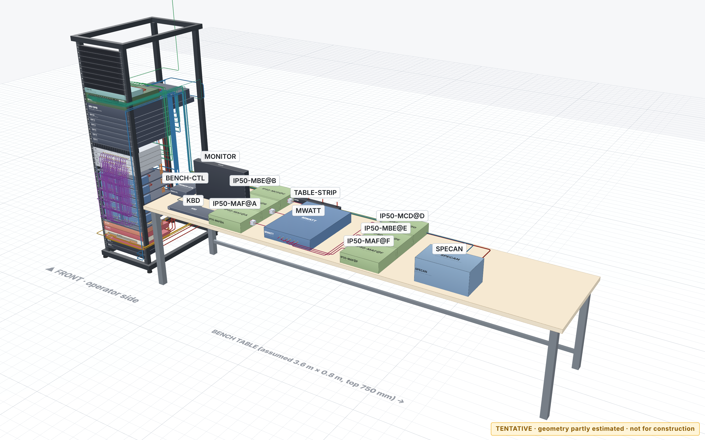
Contents
1 How to read this guide
Each step names the parts and cables by ID. The same IDs are printed in the tables, written on the cable tags, and searchable in the interactive twin.
- Rack tipping. Lock the castors or fit the stabiliser feet before you load the rack, and load from the bottom up. The 7 servers at U24-U31 (up to 823 mm deep) make it top-heavy: never pull out more than one unit at a time.
- Earth first. Bond the rack earth stud to the building earth (6 mm² green/yellow lead, ring lug) before any device goes in; clip the ESD wrist strap to the rack earth.
- Lifting. The rack servers (two people, on their rails); the IP-50 radios (about 6 kg each, estimate).
- Two DC systems. DC-DIST is +48 V (node adaptors); DC-DIST2 is -48 V with its positive pole earthed (radios). Both use the same Belden cable: tag -48 V cables blue and +48 V cables red. Breakers OFF and fuses out while you wire.
- Passive PoE. The RJ45 of every DC/PoE adaptor (the P-cables) carries 48 V: plug it only into the node's ETH1, never into a switch, PC or laptop.
- RF. Never power a node or radio while one of its SMA tiles or a waveguide flange is open: close the chain or fit a 50-ohm load first.
- Lasers. The SFP+ SR optics are Class 1 lasers: keep the dust caps on until you mate, never look into a fibre end, clean every LC end (one-click cleaner) before you plug it.
- GNSS lead. The roof antenna lead enters through a surge arrestor that must be earthed at the building entry (site work).
Rules for every step
- Tag both ends of every cable with its ID before you route it. Use the label printer cartridges in the parts list.
- ESD wrist strap to the rack earth whenever you touch a Spider box, attenuator, SFP or radio. Torque every SMA to 8 in-lb (0.9 N·m) with the SMA torque wrench. Finger-tight is not enough and more damages the connector.
- Rack units count from the bottom: U1 is the lowest unit. A device marked U33-U34 takes two units. The U numbers are printed on the front-left post in the pictures.
- Front is the operator side (Spider-box and attenuator SMA panels). Rear carries the PDU outlets, DC terminals and the node ETH / SFP ports. Every picture has a badge in its top-left corner: FRONT VIEW, REAR VIEW (seen from behind: the rack's left and right swap) or VIEW FROM ABOVE. "Left" and "right" in the tables are always as seen from the FRONT.
- Length is the stock length to fit; "route" is the length the twin measured along the cable path. Dress the slack in the cable manager.
- Terminate unused tile and coupler SMA ports with 50-ohm loads (ANNE-50+).
- Power stays off until the last step: PDUs unplugged, breakers and fuses OFF.
How the pictures work
- Each step picture shows the bench as it is after that step. Items fitted in this step are bright with an orange outline and an ID tag; items from earlier steps are pale; later items are not shown.
- Cables are drawn in their class colour along the route the twin planned; DC, GNSS and WG cables are also banded. Small labels give the cable ID.
- Close-ups of a connector panel are straight on with the cables left out: every port carries a tag (port, cable ID, far end) on a leader line.
- Close-ups of the Spider boxes are straight on: module (M1-M4), sector (e.g. HUB.W) and tile (T1-T4) are labelled.
- Every picture carries the TENTATIVE mark: the scene is a planning model, not a construction drawing.
Cable colours and ID scheme
| Class / colour | ID | What it carries | Cables | Typical part | Step |
|---|---|---|---|---|---|
| AC | A001… | AC mains | 28 | P004-006, P004-010 | 12 |
| DC | D001… | DC power | 15 | Belden 8461, bus link | 13 |
| POE | P001… | PoE (power only) to node ETH1 | 7 | STP6X1MBU | 14 |
| FIB | F001… | data to SW-DATA | 19 | AXC763-10000S, FZ2ERLNLNSNM005 | 15 |
| ETH | E001… | management to SW-OOB | 22 | STP6X2MBU, STP6X3MBU | 16 |
| RF | R001… | IF coax (SMA) | 96 | CBL-2FT-SMSM+, CBL-3FT-SMSM+ | 19, 20, 21, 22, 23, 24, 25, 26, 27, 28 |
| GNSS | G001… | GNSS coax | 8 | RG-316, LMR-400 | 17 |
| WG | W001… | IP-50 chain | 12 | PEWCA1003, CBL-3FT-SMSM+ | 29 |
| AUX | X001… | operator station (video, USB) | 2 | video cable, keyboard + mouse | 18 |
Cable IDs are a class letter and a number: A = AC, D = DC, P = PoE, F = data, E = management, R = IF coax, G = GNSS, W = IP-50 chain, X = operator station. The colours are a print palette (DC, GNSS and WG also banded) shared with the twin; the cable schedule files keep the scene colours. Port IDs are DEVICE.PORT: ATT-01.ch1.in is attenuator ATT-01, channel 1 input; SB2.M1.T1 is Spider box SB2, module M1, tile 1.
Confidence of each item
estimate size or position estimated (photos, stand-in model). likely from the datasheet of the probable model. confirmed known part and size.
2 Overview
Rack front elevation
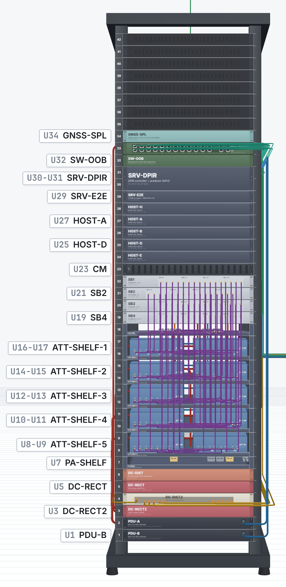
Read from the top. Every U is listed; consecutive blanking panels share a row. Rack: StarTech 4POSTRACK42, 42U, rail-to-rail depth 900 mm; U1 starts 120 mm above the floor.
| U | Device | Part |
|---|---|---|
| U35-U42 | blanking panels | AR8136BLK |
| U34 | GNSS-SPL | RMALDCBS1X8 |
| U33 | SW-DATA | Netgear M4350-24F4V |
| U32 | SW-OOB | Netgear M4250-26G4XF-PoE+ (GSM4230PX) |
| U30-U31 | SRV-DPIR | 2U rack server (lab) |
| U29 | SRV-E2E | 1U rack server (lab) |
| U28 | HOST-H | 1U rack server, 10G SFP+ NIC |
| U27 | HOST-A | 1U rack server, 10G SFP+ NIC |
| U26 | HOST-B | 1U rack server, 10G SFP+ NIC |
| U25 | HOST-D | 1U rack server, 10G SFP+ NIC |
| U24 | HOST-E | 1U rack server, 10G SFP+ NIC |
| U23 | CM | Panduit NCMHF1 |
| U22 | SB1 | GTS003 · even |
| U21 | SB2 | GTST002B · even |
| U20 | SB3 | GTST003 · odd |
| U19 | SB4 | GTS003 · odd |
| U18 | CPL-TRAY | 16 couplers, DC blocks, pads |
| U16-U17 | ATT-SHELF-1 | 2U shelf, 2 programmable attenuator boxes (4 ch, dial) |
| U14-U15 | ATT-SHELF-2 | 2U shelf, 2 programmable attenuator boxes (4 ch, dial) |
| U12-U13 | ATT-SHELF-3 | 2U shelf, 2 programmable attenuator boxes (4 ch, dial) |
| U10-U11 | ATT-SHELF-4 | 2U shelf, 2 programmable attenuator boxes (4 ch, dial) |
| U8-U9 | ATT-SHELF-5 | 2U shelf, 2 programmable attenuator boxes (4 ch, dial) |
| U7 | PA-SHELF | Siklu EH-PoE-DC-Adaptor-10 on a shelf |
| U6 | DC-DIST | Eaton DCD1M |
| U5 | DC-RECT | Mean Well RCP-1UI + 2 x RCP-1000-48 |
| U4 | DC-DIST2 | Westell N250110-N-0803, GMT fuses |
| U3 | DC-RECT2 | RCP-1UI + RCP-1000-48, wired -48 V |
| U2 | PDU-A | Raritan PX3-5260R class (1U, 12 x C13, switched, 16 A) |
| U1 | PDU-B | Raritan PX3-5260R class (1U, 12 x C13, switched, 16 A) |
Rack front elevation, enlarged
The same elevation at twice the scale, seen from the front; U numbers on the left post. No cables; every unit labelled beside the rack.


Rack rear
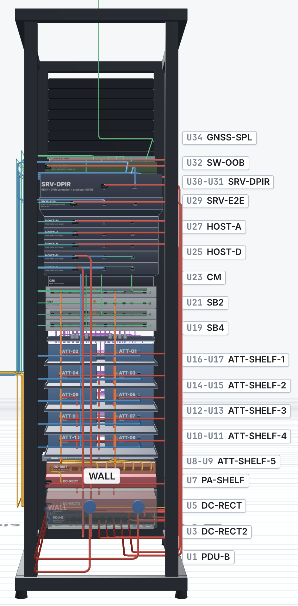
Most cabling happens at the rear: PDU outlets, DC terminals, the node power (ETH1), data (SFP+) and GNSS ports. Connectors that face the rear, per rack item (counting the parts on its shelf):
| U | Device | Rear connectors | Used |
|---|---|---|---|
| U34 | GNSS-SPL | 9 SMA, 1 C14 | 9 / 10 |
| U33 | SW-DATA | 1 C14 | 1 / 1 |
| U32 | SW-OOB | 26 RJ45, 4 SFP, 1 C14 | 23 / 31 |
| U30-U31 | SRV-DPIR | 1 RJ45, 1 C14 | 2 / 2 |
| U29 | SRV-E2E | 1 SFP, 1 RJ45, 1 C14 | 3 / 3 |
| U28 | HOST-H | 1 SFP, 1 RJ45, 1 C14 | 3 / 3 |
| U27 | HOST-A | 1 SFP, 1 RJ45, 1 C14 | 3 / 3 |
| U26 | HOST-B | 1 SFP, 1 RJ45, 1 C14 | 3 / 3 |
| U25 | HOST-D | 1 SFP, 1 RJ45, 1 C14 | 3 / 3 |
| U24 | HOST-E | 1 SFP, 1 RJ45, 1 C14 | 3 / 3 |
| U22 | SB1 | 5 RJ45, 2 SFP, 2 SMA, 2 USB, 1 DC | 6 / 12 |
| U21 | SB2 | 3 RJ45, 1 SFP, 1 SMA, 1 USB, 1 DC | 3 / 7 |
| U20 | SB3 | 5 RJ45, 2 SFP, 2 SMA, 2 USB, 1 DC | 6 / 12 |
| U19 | SB4 | 5 RJ45, 2 SFP, 2 SMA, 2 USB, 1 DC | 6 / 12 |
| U16-U17 | ATT-SHELF-1 | 2 RJ45, 2 DC | 4 / 4 |
| U14-U15 | ATT-SHELF-2 | 2 RJ45, 2 DC | 4 / 4 |
| U12-U13 | ATT-SHELF-3 | 2 RJ45, 2 DC | 4 / 4 |
| U10-U11 | ATT-SHELF-4 | 2 RJ45, 2 DC | 4 / 4 |
| U8-U9 | ATT-SHELF-5 | 2 RJ45, 2 DC | 4 / 4 |
| U7 | PA-SHELF | 7 RJ45, 7 DC | 14 / 14 |
| U6 | DC-DIST | 11 DC | 8 / 11 |
| U5 | DC-RECT | 1 C14, 1 DC | 2 / 2 |
| U3 | DC-RECT2 | 1 C14, 1 DC | 2 / 2 |
| U2 | PDU-A | 12 C13, 1 IEC60309 | 13 / 13 |
| U1 | PDU-B | 12 C13, 1 IEC60309 | 11 / 13 |
Rack rear elevation, enlarged
The same elevation at twice the scale, seen from behind the rack: its left and right swap; the lab wall left out. No cables; every unit labelled beside the rack.


Bench table layout
Plan from above, to scale. Rear (wall side) at the top, operator side at the bottom. Numbers match the table. Dashed boxes stand on top of another device; pink squares are the waveguide transitions on the radio flanges. Assumed: one 3.6 m x 0.8 m bench table to the right of the rack, top at 750 mm (estimate).
Positions
| # | ID | What it is | Position (from the table's rack-side end / front edge) | W × D × H mm | Conf. |
|---|---|---|---|---|---|
| 1 | BENCH-CTL | bench controller: run script, ATT / PDU commands, logging (always on) | 20 mm from the rack-side end, 310 mm from the front edge | 180 × 180 × 55 | estimate |
| 2 | KBD | keyboard + mouse | 220 mm from the rack-side end, 60 mm from the front edge | 440 × 140 × 25 | estimate |
| 3 | MONITOR | 24-inch monitor (operator station) | 240 mm from the rack-side end, 390 mm from the front edge | 540 × 60 × 330 | estimate |
| 4 | IP50-MAF@A | IP-50, hop MAF at A | 700 mm from the rack-side end, 20 mm from the front edge | 322 × 270 × 86 | estimate |
| 5 | IP50-MBE@B | IP-50, hop MBE at B | 700 mm from the rack-side end, 270 mm from the front edge | 322 × 270 × 86 | estimate |
| 6 | IP50-MCD@C | IP-50, hop MCD at C | 700 mm from the rack-side end, 520 mm from the front edge | 322 × 270 × 86 | estimate |
| 7 | TABLE-STRIP | bench mains strip, C13 | 980 mm from the rack-side end, 730 mm from the front edge | 485 × 44 × 44 | estimate |
| 8 | MWATT | Keysight J7204B, 4 ch | 1220 mm from the rack-side end, 60 mm from the front edge | 426 × 578 × 88 | likely |
| 9 | IP50-MAF@F | IP-50, hop MAF at F | 1936 mm from the rack-side end, 20 mm from the front edge | 322 × 270 × 86 | estimate |
| 10 | IP50-MBE@E | IP-50, hop MBE at E | 1936 mm from the rack-side end, 270 mm from the front edge | 322 × 270 × 86 | estimate |
| 11 | IP50-MCD@D | IP-50, hop MCD at D | 1936 mm from the rack-side end, 520 mm from the front edge | 322 × 270 × 86 | estimate |
| 12 | SPECAN | spectrum analyser / power sensor | 2520 mm from the rack-side end, 60 mm from the front edge | 408 × 235 × 186 | likely |
| 13 | WGT-MAF-A | Pasternack PEWCA1003 WR-62 to SMA-F (33.3 mm flange); band to confirm | on IP50-MAF@A (on its waveguide flange) | 33 × 35 × 33 | estimate |
| 14 | WGT-MBE-A | Pasternack PEWCA1003 WR-62 to SMA-F (33.3 mm flange); band to confirm | on IP50-MBE@B (on its waveguide flange) | 33 × 35 × 33 | estimate |
| 15 | WGT-MCD-A | Pasternack PEWCA1003 WR-62 to SMA-F (33.3 mm flange); band to confirm | on IP50-MCD@C (on its waveguide flange) | 33 × 35 × 33 | estimate |
| 16 | WGT-MAF-B | Pasternack PEWCA1003 WR-62 to SMA-F (33.3 mm flange); band to confirm | on IP50-MAF@F (on its waveguide flange) | 33 × 35 × 33 | estimate |
| 17 | WGT-MBE-B | Pasternack PEWCA1003 WR-62 to SMA-F (33.3 mm flange); band to confirm | on IP50-MBE@E (on its waveguide flange) | 33 × 35 × 33 | estimate |
| 18 | WGT-MCD-B | Pasternack PEWCA1003 WR-62 to SMA-F (33.3 mm flange); band to confirm | on IP50-MCD@D (on its waveguide flange) | 33 × 35 × 33 | estimate |
Bench table, 3D view
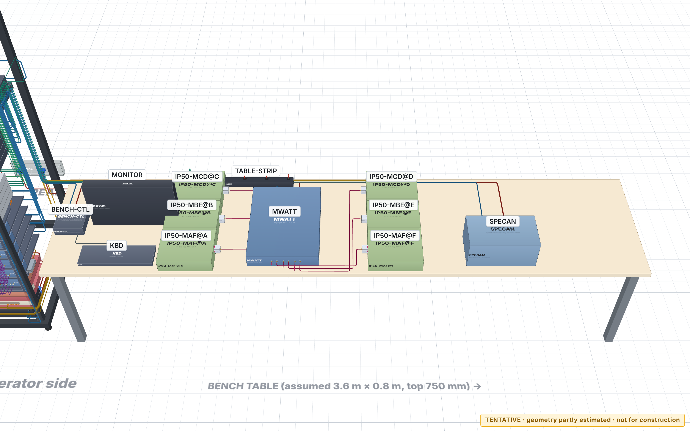
3 Bill of materials
From poc2_parts_list.csv. Quantities include spares where noted. "Status" is how sure the part is; check every "to confirm" line before ordering. Lines G1… (shaded) are installation hardware this guide calls for that the parts list does not carry yet.
| # | Group | Item | Part number | Maker | Qty | Use | Status |
|---|---|---|---|---|---|---|---|
| 1 | Radios | 1U Spider box, 2 x N367 node x 2 sectors | GTS003 (lab label) | Siklu | 2 | 4 sector modules FATJ0498, 16 SMA tile ports | on hand; to confirm |
| 2 | Radios | 1U Spider box, 1 x N367 node x 4 sectors (hub) | GTST002B (lab label) | Siklu | 1 | 16 SMA tile ports | on hand; to confirm |
| 3 | Radios | 1U Spider box, 2 x N367 node x 2 sectors (assumed) | GTST003 (lab label) | Siklu | 1 | 16 SMA tile ports | on hand; to confirm |
| 4 | Radios | '6*4 sector nodes - GTSTU022\23' | GTSTU022 / GTSTU023 | Siklu | ? | not identified (TU boxes?); not used here | to confirm with the lab |
| 5 | Radios | N367 node (inside the Spider boxes) | MultiHaul TG N367 (MH-N367-CCP-PoE-MWB class) | Siklu | 7 | ETH1 power in, SFP+ 10G data; managed in-band; 48 W with PoE-Out off | datasheet |
| 6 | Radios | IP-50CX compact dual-carrier radio (1/10/25GbE ports) | Ceragon IP-50CX (band TBC) | Ceragon | 6 | 3 conducted hops, -48 V; data on a 10GbE port | on hand (8); band to confirm |
| 7 | Power | DC/PoE adaptor, passive, bag of 10 ('DC\POE for falcon') | EH-PoE-DC-Adaptor-10 | Siklu | 1 bag (7 wired, 3 spare unwired) | 36-57 V DC in, RJ-45 to node ETH1 (power only) | likely |
| 8 | Power | DC drawer: rectifier shelf 1U + 2 x 1 kW 48 V modules | RCP-1UI + 2 x RCP-1000-48 | Mean Well | 1 | 48 V bus, 336 W for 7 nodes | likely (shelf) / confirmed (modules) |
| 9 | Power | DC drawer: distribution, 10 breakers | DCD1M (suffix TBC) | Eaton | 1 | one breaker per adaptor; CB8-10 spare, OFF | likely |
| 10 | Power | -48 V rectifier for the IP-50 radios | RCP-1UI + RCP-1000-48 wired -48 V | Mean Well | 1 | 6 radios x ~58 W (IP-50E figure; recheck for the model) | likely |
| 11 | Power | -48 V fuse panel 1U, 2 buses x 5 GMT positions | N250110-N-0803 | Westell | 1 | one fused output per surviving IP-50 radio | to confirm |
| 12 | Power | GMT fuse for the -48 V panel | GMT 3 A (rating to confirm) | Bussmann / Littelfuse | 8 | 6 + 2 spare | to confirm |
| 13 | Power | Rack PDU 1U, 16 A, 12 x C13, switched per outlet | Raritan PX3-5260R class | Raritan (or equal) | 2 | IEC 60309 16 A inlet | to confirm (user: 1U PDU) |
| 14 | Power | Bench-table mains strip, C13 outlets | lab-supplied (part TBC) | - | 1 | 4 table loads | to confirm |
| 15 | Power | 'Exten' lead C14 -> C13 1.83 m | P004-006 | Eaton Tripp Lite | 17 | rack and table devices, traffic hosts | confirmed |
| 16 | Power | 'Exten' lead C14 -> C13 3.05 m | P004-010 | Eaton Tripp Lite | 9 | rack and table devices, servers, traffic hosts | confirmed |
| 17 | Power | DC cable 2 x 18 AWG (bulk) + ferrules | Belden 8461 + Phoenix 3200519 | Belden / Phoenix | 28 m + 52 ferrules | 13 runs; 100 ft spool = 30.5 m | confirmed |
| 18 | Power | DC bus link 2 x 10 AWG with ring lugs (cut to length) | part TBC | - | 2 | rectifier to distribution, 1.75 m in all | to confirm |
| 19 | Network | Data switch, 24 x SFP+ + 4 x SFP28, L3 | M4350-24F4V (XSM4328FV) | Netgear | 1 | 19 of 28 ports; 1G only on P1-16 | confirmed |
| 20 | Network | Management switch, 24 x 1G PoE+ + 2 x 1G + 4 x SFP+ | M4250-26G4XF-PoE+ (GSM4230PX) | Netgear | 1 | 22 ports: 22 of 26 RJ-45 | confirmed |
| 21 | Network | SFP+ SR optics: node side / host side / switch side | AX-SFP+10G-MM / host NIC optic / AXM761-10000S | Siklu / - / Netgear | 7 / 6 / 13 | both ends of every OM4 run | likely / to confirm / confirmed |
| 22 | Network | OM4 LC-LC duplex 2 m | FZ2ERLNLNSNM002 | Panduit | 3 | confirmed | |
| 23 | Network | OM4 LC-LC duplex 3 m | FZ2ERLNLNSNM003 | Panduit | 4 | likely | |
| 24 | Network | OM4 LC-LC duplex 5 m | FZ2ERLNLNSNM005 | Panduit | 6 | likely | |
| 25 | Network | SFP+ DAC 3 m | AXC763-10000S | Netgear | 6 | confirmed | |
| 26 | Network | Cat6A S/FTP patch 1 m | STP6X1MBU | Panduit | 8 | confirmed | |
| 27 | Network | Cat6A S/FTP patch 2 m | STP6X2MBU | Panduit | 11 | confirmed | |
| 28 | Network | Cat6A S/FTP patch 3 m | STP6X3MBU | Panduit | 8 | confirmed | |
| 29 | Network | Cat6A S/FTP patch 5 m | STP6X5MBU | Panduit | 1 | likely | |
| 30 | Network | Cat6A S/FTP patch 7 m | STP6X7MBU | Panduit | 1 | likely | |
| 31 | RF/IF | Programmable attenuator box, 4 ch, 0-63 dB, to 18 GHz (small box with a dial; e.g. ZTDAT-4-18G63S class) | ZTDAT-4-18G63S class (model TBC) | Mini-Circuits (or equal) | 10 | 5 x 2U shelves | reuse 9 from PoC 1, buy 1 |
| 32 | RF/IF | 10 dB directional coupler 1-18 GHz | KRYTAR 1821 (alt. ZUDC10-183+) | KRYTAR | 16 | IN at the module | confirmed |
| 33 | RF/IF | DC block 18 GHz | BLK-18-S+ | Mini-Circuits | 16 | both ends of each arm | confirmed |
| 34 | RF/IF | Fixed pad DC-18 GHz 2 W (value TBC, e.g. BW-S10W2+) | BW-S<n>W2+ | Mini-Circuits | 8 | arm input side, at the coupler | value to confirm |
| 35 | RF/IF | SMA test cable 18 GHz 0.30 m | CBL-1FT-SMSM+ | Mini-Circuits | 20 | IF chain, length from the rack span | confirmed |
| 36 | RF/IF | SMA test cable 18 GHz 0.61 m ('RF cable': 10 on hand, type TBC) | CBL-2FT-SMSM+ | Mini-Circuits | 37 | IF chain, length from the rack span | confirmed |
| 37 | RF/IF | SMA test cable 18 GHz 0.91 m | CBL-3FT-SMSM+ | Mini-Circuits | 38 | IF chain, length from the rack span | confirmed |
| 38 | RF/IF | SMA test cable 18 GHz 1.00 m | CBL-1M-SMSM+ | Mini-Circuits | 5 | IF chain, length from the rack span; IP-50 chains | confirmed |
| 39 | RF/IF | SMA test cable 18 GHz 2.00 m | CBL-2M-SMSM+ | Mini-Circuits | 2 | IF chain, length from the rack span | confirmed |
| 40 | RF/IF | 50-ohm SMA load | ANNE-50+ | Mini-Circuits | as needed | unused tile and coupler ports | confirmed |
| 41 | RF/IF | SMA torque wrench 8 in-lb | ST-SMA3 | Fairview | 2 | confirmed | |
| 42 | IP-50 chain | Waveguide-to-coax transition, WR-62 12.4-18 GHz (<=18 GHz set) | PEWCA1003 | Pasternack | 6 | band and flange mating TBC | likely |
| 43 | IP-50 chain | 30 dB 10 W pad DC-18 GHz (<=18 GHz set) | SA18S10W-30 | Fairview | 6 | one at each radio port, on the transition | confirmed |
| 44 | IP-50 chain | Programmable attenuator 4 ch DC-18 GHz (<=18 GHz set) | J7204B opt 002 | Keysight | 1 | 3 channels used; LAN to SW-OOB | confirmed |
| 45 | IP-50 chain | Alternative set if the band is 18-26.5 GHz (replaces the 3 lines above) | PEWCA1018 + FMAT4009-30 + 84906K/84904K/11713C | Pasternack / Fairview / Keysight | replaces the set | 2.92 mm pads and cables | alternative |
| 46 | Timing | GNSS antenna + 1x8 splitter | 101898-00 + RMALDCBS1X8 | Protempis / GPS Networking | 1 + 1 | only if the boxes take GNSS (N367 GPS is internal) | to confirm |
| 47 | Timing | GNSS coax: antenna lead + surge arrestor / splitter jumpers | LMR-400 + arrestor / RG-316 SMA 1 m | part TBC | 1 / 7 | only if the boxes take GNSS | to confirm |
| 48 | Compute | Traffic host, 1U rack server (10G SFP+ NIC, iperf3/TRex) | lab server | - | 5 | in the rack, with its rails | on hand; to confirm |
| 49 | Compute | Rack servers: SRV-DPIR (2U); SRV-E2E (1U) | lab servers | - | 2 | in the rack, with their rails | on hand; to confirm |
| 50 | Compute | Bench controller PC + monitor + keyboard/mouse (operator station on the table) | lab PC | - | 1 + 1 + 1 | stays powered through the event; drives PDUs and attenuators over SW-OOB | on hand; to confirm |
| 51 | Compute | Video cable (DisplayPort / HDMI) 1.8 m | part TBC | - | 1 | PC to monitor | to confirm |
| 52 | Rack | 19-inch 4-post rack (34U used of 42U) | StarTech 4POSTRACK42 | StarTech | 1 | rail type (square hole?) to confirm | confirmed |
| 53 | Rack | 1U vented shelf | CABSHELFV1U | StarTech | 7 | adaptors, tray, attenuator boxes | likely |
| 54 | Rack | Cable manager / blanking panels (pack of 10) / labels | NCMHF1 / AR8136BLK / Brady M21-750-427 | various | 1 / 1 / 3 | 8 empty U | confirmed; rail type to confirm |
| 55 | Test | 18 GHz power sensor / spectrum analyser | NRP18S / FPL1026 | R&S | 1 / 1 | port checks, calibration | confirmed |
| 56 | Test | N-F to SMA-F adapter for the power sensor | NF-SF50+ | Mini-Circuits | 1 | NRP18S input is N-male | confirmed |
| G1 | Safety | Rack earth bond: 6 mm² green/yellow lead with ring lugs | TBC | - | 1 set | rack earth stud to the building earth (step 1) | added by the guide; to confirm |
| G2 | Safety | ESD wrist strap with coiled lead and clip | TBC | - | 2 | clipped to the rack earth | added by the guide; to confirm |
| G3 | Power | Cable tags, red (+48 V) and blue (-48 V) | TBC | - | 1 roll each | tag both ends of every DC cable (step 13) | added by the guide; to confirm |
| G4 | Power | Ring lugs for 2 × 10 AWG bus links, hole to match the stud | stud size TBC (measure) | - | 8 + 4 spare | both ends of D001, D009 | added by the guide; to confirm |
| G5 | Power | A-B bus strap for DC-DIST2 (both poles), or 10 AWG links with ring lugs | TBC (vendor strap kit) | - | 1 per panel (1) | makes bus B (F6-F10) live | added by the guide; to confirm |
| G6 | IP-50 chain | WR-62 flange screws #4-40 with lock washers (4 per joint) | TBC with the transition datasheet | - | 24 + 8 spare | 6 radio-to-transition flange joints; about 0.6 N·m (5 in-lb, TBC) | added by the guide; to confirm |
| G7 | IP-50 chain | WR-62 flange gasket (only for a gasketed / choke radio flange) | TBC | - | 6 (if needed) | open question 5 | added by the guide; to confirm |
| G8 | Data | LC one-click fibre cleaner and spare LC dust caps | TBC | - | 1 + 20 caps | clean before every mating (step 15) | added by the guide; to confirm |
4 Installation steps
Follow the steps in order. Each step starts on a new page: the picture shows the bench after the step, the tables list what to fit or connect.
| Step | Title | Kind | View | Items |
|---|---|---|---|---|
| 1 | Assemble the rack | rack | front | - |
| 2 | Mount the PDUs | devices | rear | 2 items |
| 3 | Mount the DC drawers | devices | front | 4 items |
| 4 | Adaptor shelf | devices | rear | 11 items |
| 5 | Programmable attenuators | devices | front | 15 items |
| 6 | Splitter / coupler tray | devices | front | 17 items |
| 7 | Spider boxes | devices | front | 4 items |
| 8 | Servers and traffic hosts | devices | front | 7 items |
| 9 | Switches, cable manager, shelves | devices | front | 4 items |
| 10 | Blanking panels | devices | front | 8 items |
| 11 | Bench table | devices | table | 18 items |
| 12 | Cable: AC mains | cables | rear | 28 cables |
| 13 | Cable: DC power | cables | rear | 15 cables |
| 14 | Cable: PoE to the nodes | cables | rear | 7 cables |
| 15 | Cable: Data to SW-DATA | cables | rear | 19 cables |
| 16 | Cable: Management to SW-OOB | cables | rear | 22 cables |
| 17 | Cable: GNSS | cables | rear | 8 cables |
| 18 | Cable: Operator station | cables | table | 2 cables |
| 19 | IF link THA (ATT-01) | IF link | front | 12 cables |
| 20 | IF link TAB (ATT-02) | IF link | front | 12 cables |
| 21 | IF link TBC (ATT-03) | IF link | front | 8 cables |
| 22 | IF link TCH (ATT-04) | IF link | front | 8 cables |
| 23 | IF link THD (ATT-05) | IF link | front | 12 cables |
| 24 | IF link TDE (ATT-06) | IF link | front | 12 cables |
| 25 | IF link TEF (ATT-07) | IF link | front | 8 cables |
| 26 | IF link TFH (ATT-08) | IF link | front | 8 cables |
| 27 | Coupling arm KBD (ATT-09) | coupling arm | front | 8 cables |
| 28 | Coupling arm KAE (ATT-10) | coupling arm | front | 8 cables |
| 29 | IP-50 conducted chains | IP-50 chains | table | 12 cables |
| 30 | Checks and power-up | checks | iso | - |
Assemble the rack
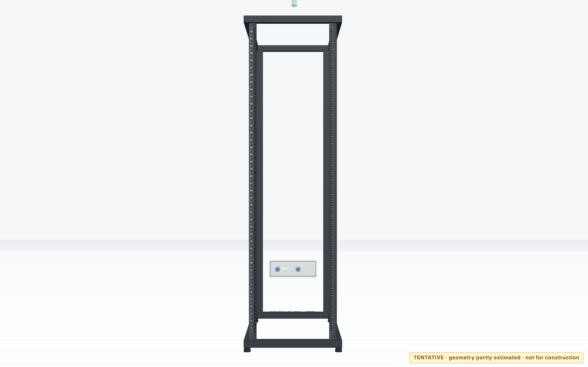
Rack facts
| Item | Value |
|---|---|
| Rack | StarTech 4POSTRACK42 |
| Units | 42U, 34U used; U1 is the lowest unit |
| Rail-to-rail depth | 900 mm (deepest device 823 mm) |
| Frame width | 600 mm; 19-inch panel 482.6 mm |
| U1 height | 120 mm above the floor (bottom of U1) |
| Assumed | StarTech 4POSTRACK42 (rails adjustable 559-1016 mm, square holes, M6 cage nuts); rail-to-rail depth set to 900 mm so 800 mm-class rack servers fit |
| Assumed | U1 bottom 120 mm above the floor (on castors, estimate) |
Mount the PDUs
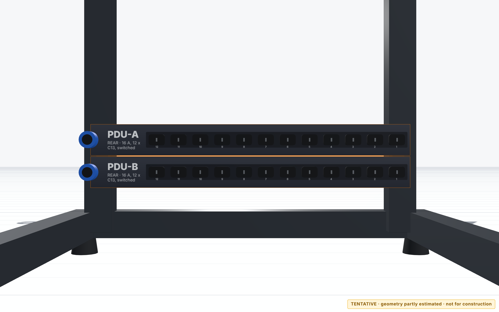
Fit these 2 items
| ID | What it is / part | Where (left = as seen from the FRONT) | Mounting notes | Conf. |
|---|---|---|---|---|
| PDU-A | PDU-A 16 A, 12 x C13, switched Raritan PX3-5260R class (1U, 12 x C13, switched, 16 A) | U2 · 483 × 44 mm face, 183 mm deep | 1U switched PDU, 12 x C13, 16 A (Raritan PX3-5260R class, 183 mm); outlets on the rear assumed connectors front: 1 RJ45; rear: 12 C13, 1 IEC60309 | estimate |
| PDU-B | PDU-B 16 A, 12 x C13, switched Raritan PX3-5260R class (1U, 12 x C13, switched, 16 A) | U1 · 483 × 44 mm face, 183 mm deep | 1U switched PDU, 12 x C13, 16 A (Raritan PX3-5260R class, 183 mm); outlets on the rear assumed connectors front: 1 RJ45; rear: 12 C13, 1 IEC60309 | estimate |
Mount the DC drawers
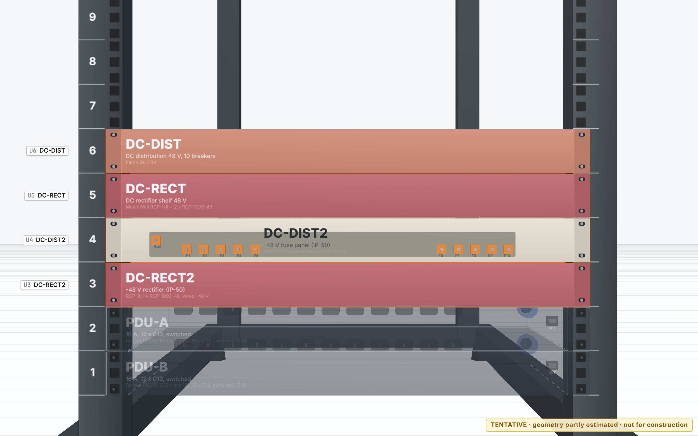
Fit these 4 items
| ID | What it is / part | Where (left = as seen from the FRONT) | Mounting notes | Conf. |
|---|---|---|---|---|
| DC-DIST | DC distribution 48 V, 10 breakers Eaton DCD1M | U6 · 483 × 44 mm face, 280 mm deep | Eaton DCD1M (~280 mm): breakers front; load terminal face to confirm (rear assumed) connectors rear: 11 DC | estimate |
| DC-RECT | DC rectifier shelf 48 V Mean Well RCP-1UI + 2 x RCP-1000-48 | U5 · 483 × 44 mm face, 351 mm deep | Mean Well RCP-1UI (350.8 mm): 3 C14 inlets and the DC bus at the rear connectors rear: 1 C14, 1 DC | likely |
| DC-DIST2 | -48 V fuse panel (IP-50) Westell N250110-N-0803, GMT fuses | U4 · 483 × 44 mm face, 148 mm deep | Westell N250110-N-0803 (147.8 mm, vendor TP): all terminals and GMT fuses on the FRONT connectors front: 11 DC | likely |
| DC-RECT2 | -48 V rectifier (IP-50) RCP-1UI + RCP-1000-48, wired -48 V | U3 · 483 × 44 mm face, 351 mm deep | Mean Well RCP-1UI (350.8 mm): 3 C14 inlets and the DC bus at the rear connectors rear: 1 C14, 1 DC | likely |
Adaptor shelf
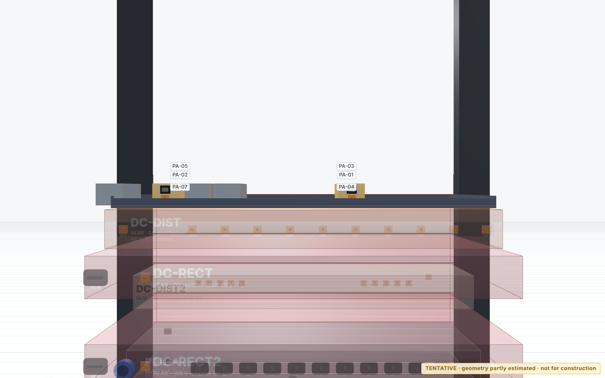
Fit these 11 items
| ID | What it is / part | Where (left = as seen from the FRONT) | Mounting notes | Conf. |
|---|---|---|---|---|
| PA-SHELF | DC/PoE adaptors PA-01..PA-10 Siklu EH-PoE-DC-Adaptor-10 on a shelf | U7 · 483 × 44 mm face, 254 mm deep | 1U vented shelf StarTech CABSHELFV1U (254 mm) carries 10: PA-01, PA-02, PA-03, PA-04, PA-05, PA-06, PA-07, PA-08, PA-09, PA-10 | likely |
| PA-01 | DC/PoE adaptor Siklu EH-PoE-DC-Adaptor (size estimate) | on PA-SHELF (U7): 171 mm from the left ear (left as seen from the FRONT), 154 mm behind the front rail | Siklu EH-PoE-DC-Adaptor (size estimate) connectors rear: 1 RJ45, 1 DC | estimate |
| PA-02 | DC/PoE adaptor Siklu EH-PoE-DC-Adaptor (size estimate) | on PA-SHELF (U7): 385 mm from the left ear (left as seen from the FRONT), 154 mm behind the front rail | Siklu EH-PoE-DC-Adaptor (size estimate) connectors rear: 1 RJ45, 1 DC | estimate |
| PA-03 | DC/PoE adaptor Siklu EH-PoE-DC-Adaptor (size estimate) | on PA-SHELF (U7): 171 mm from the left ear (left as seen from the FRONT), 154 mm behind the front rail | Siklu EH-PoE-DC-Adaptor (size estimate) connectors rear: 1 RJ45, 1 DC | estimate |
| PA-04 | DC/PoE adaptor Siklu EH-PoE-DC-Adaptor (size estimate) | on PA-SHELF (U7): 171 mm from the left ear (left as seen from the FRONT), 154 mm behind the front rail | Siklu EH-PoE-DC-Adaptor (size estimate) connectors rear: 1 RJ45, 1 DC | estimate |
| PA-05 | DC/PoE adaptor Siklu EH-PoE-DC-Adaptor (size estimate) | on PA-SHELF (U7): 385 mm from the left ear (left as seen from the FRONT), 154 mm behind the front rail | Siklu EH-PoE-DC-Adaptor (size estimate) connectors rear: 1 RJ45, 1 DC | estimate |
| PA-06 | DC/PoE adaptor Siklu EH-PoE-DC-Adaptor (size estimate) | on PA-SHELF (U7): 171 mm from the left ear (left as seen from the FRONT), 154 mm behind the front rail | Siklu EH-PoE-DC-Adaptor (size estimate) connectors rear: 1 RJ45, 1 DC | estimate |
| PA-07 | DC/PoE adaptor Siklu EH-PoE-DC-Adaptor (size estimate) | on PA-SHELF (U7): 385 mm from the left ear (left as seen from the FRONT), 154 mm behind the front rail | Siklu EH-PoE-DC-Adaptor (size estimate) connectors rear: 1 RJ45, 1 DC | estimate |
| PA-08 | DC/PoE adaptor Siklu EH-PoE-DC-Adaptor (size estimate) (spare, unwired) | on PA-SHELF (U7): 314 mm from the left ear (left as seen from the FRONT), 154 mm behind the front rail | Siklu EH-PoE-DC-Adaptor (size estimate) | estimate |
| PA-09 | DC/PoE adaptor Siklu EH-PoE-DC-Adaptor (size estimate) (spare, unwired) | on PA-SHELF (U7): 348 mm from the left ear (left as seen from the FRONT), 154 mm behind the front rail | Siklu EH-PoE-DC-Adaptor (size estimate) | estimate |
| PA-10 | DC/PoE adaptor Siklu EH-PoE-DC-Adaptor (size estimate) (spare, unwired) | on PA-SHELF (U7): 450 mm from the left ear (left as seen from the FRONT), 154 mm behind the front rail | Siklu EH-PoE-DC-Adaptor (size estimate) | estimate |
Programmable attenuators
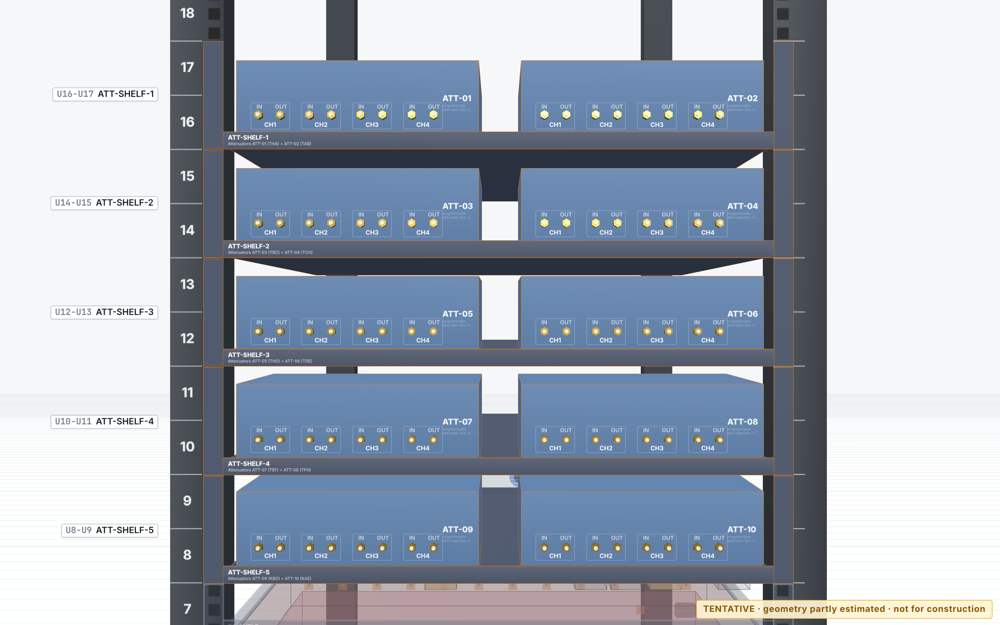
Fit these 15 items
| ID | What it is / part | Where (left = as seen from the FRONT) | Mounting notes | Conf. |
|---|---|---|---|---|
| ATT-SHELF-1 | Attenuators ATT-01 (THA) + ATT-02 (TAB) 2U shelf, 2 programmable attenuator boxes (4 ch, dial) | U16-U17 · 483 × 88 mm face, 450 mm deep | 2U of rack space with a 1U vented shelf carrying two attenuator boxes carries 2: ATT-01, ATT-02 | estimate |
| ATT-SHELF-2 | Attenuators ATT-03 (TBC) + ATT-04 (TCH) 2U shelf, 2 programmable attenuator boxes (4 ch, dial) | U14-U15 · 483 × 88 mm face, 450 mm deep | 2U of rack space with a 1U vented shelf carrying two attenuator boxes carries 2: ATT-03, ATT-04 | estimate |
| ATT-SHELF-3 | Attenuators ATT-05 (THD) + ATT-06 (TDE) 2U shelf, 2 programmable attenuator boxes (4 ch, dial) | U12-U13 · 483 × 88 mm face, 450 mm deep | 2U of rack space with a 1U vented shelf carrying two attenuator boxes carries 2: ATT-05, ATT-06 | estimate |
| ATT-SHELF-4 | Attenuators ATT-07 (TEF) + ATT-08 (TFH) 2U shelf, 2 programmable attenuator boxes (4 ch, dial) | U10-U11 · 483 × 88 mm face, 450 mm deep | 2U of rack space with a 1U vented shelf carrying two attenuator boxes carries 2: ATT-07, ATT-08 | estimate |
| ATT-SHELF-5 | Attenuators ATT-09 (KBD) + ATT-10 (KAE) 2U shelf, 2 programmable attenuator boxes (4 ch, dial) | U8-U9 · 483 × 88 mm face, 450 mm deep | 2U of rack space with a 1U vented shelf carrying two attenuator boxes carries 2: ATT-09, ATT-10 | estimate |
| ATT-01 | programmable attenuator programmable attenuator box, 4 ch (link THA) | on ATT-SHELF-1 (U16-U17): 25 mm from the left ear (left as seen from the FRONT), 8 mm behind the front rail | programmable attenuator: small 4-channel box with a dial (user), 200 x 70 x 160 mm assumed, SMA on the front connectors front: 8 SMA; rear: 1 RJ45, 1 DC | estimate |
| ATT-02 | programmable attenuator programmable attenuator box, 4 ch (link TAB) | on ATT-SHELF-1 (U16-U17): 260 mm from the left ear (left as seen from the FRONT), 8 mm behind the front rail | programmable attenuator: small 4-channel box with a dial (user), 200 x 70 x 160 mm assumed, SMA on the front connectors front: 8 SMA; rear: 1 RJ45, 1 DC | estimate |
| ATT-03 | programmable attenuator programmable attenuator box, 4 ch (link TBC) | on ATT-SHELF-2 (U14-U15): 25 mm from the left ear (left as seen from the FRONT), 8 mm behind the front rail | programmable attenuator: small 4-channel box with a dial (user), 200 x 70 x 160 mm assumed, SMA on the front connectors front: 8 SMA; rear: 1 RJ45, 1 DC | estimate |
| ATT-04 | programmable attenuator programmable attenuator box, 4 ch (link TCH) | on ATT-SHELF-2 (U14-U15): 260 mm from the left ear (left as seen from the FRONT), 8 mm behind the front rail | programmable attenuator: small 4-channel box with a dial (user), 200 x 70 x 160 mm assumed, SMA on the front connectors front: 8 SMA; rear: 1 RJ45, 1 DC | estimate |
| ATT-05 | programmable attenuator programmable attenuator box, 4 ch (link THD) | on ATT-SHELF-3 (U12-U13): 25 mm from the left ear (left as seen from the FRONT), 8 mm behind the front rail | programmable attenuator: small 4-channel box with a dial (user), 200 x 70 x 160 mm assumed, SMA on the front connectors front: 8 SMA; rear: 1 RJ45, 1 DC | estimate |
| ATT-06 | programmable attenuator programmable attenuator box, 4 ch (link TDE) | on ATT-SHELF-3 (U12-U13): 260 mm from the left ear (left as seen from the FRONT), 8 mm behind the front rail | programmable attenuator: small 4-channel box with a dial (user), 200 x 70 x 160 mm assumed, SMA on the front connectors front: 8 SMA; rear: 1 RJ45, 1 DC | estimate |
| ATT-07 | programmable attenuator programmable attenuator box, 4 ch (link TEF) | on ATT-SHELF-4 (U10-U11): 25 mm from the left ear (left as seen from the FRONT), 8 mm behind the front rail | programmable attenuator: small 4-channel box with a dial (user), 200 x 70 x 160 mm assumed, SMA on the front connectors front: 8 SMA; rear: 1 RJ45, 1 DC | estimate |
| ATT-08 | programmable attenuator programmable attenuator box, 4 ch (link TFH) | on ATT-SHELF-4 (U10-U11): 260 mm from the left ear (left as seen from the FRONT), 8 mm behind the front rail | programmable attenuator: small 4-channel box with a dial (user), 200 x 70 x 160 mm assumed, SMA on the front connectors front: 8 SMA; rear: 1 RJ45, 1 DC | estimate |
| ATT-09 | programmable attenuator programmable attenuator box, 4 ch (arm KBD) | on ATT-SHELF-5 (U8-U9): 25 mm from the left ear (left as seen from the FRONT), 8 mm behind the front rail | programmable attenuator: small 4-channel box with a dial (user), 200 x 70 x 160 mm assumed, SMA on the front connectors front: 8 SMA; rear: 1 RJ45, 1 DC | estimate |
| ATT-10 | programmable attenuator programmable attenuator box, 4 ch (arm KAE) | on ATT-SHELF-5 (U8-U9): 260 mm from the left ear (left as seen from the FRONT), 8 mm behind the front rail | programmable attenuator: small 4-channel box with a dial (user), 200 x 70 x 160 mm assumed, SMA on the front connectors front: 8 SMA; rear: 1 RJ45, 1 DC | estimate |
Splitter / coupler tray
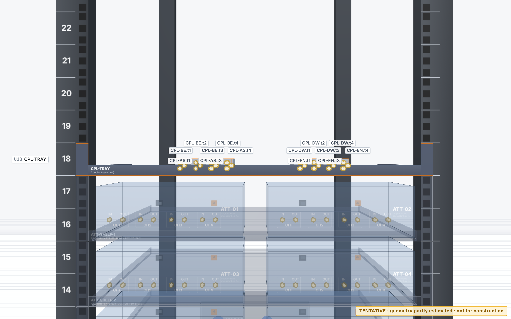
Fit these 17 items
| ID | What it is / part | Where (left = as seen from the FRONT) | Mounting notes | Conf. |
|---|---|---|---|---|
| CPL-TRAY | Coupler tray (shelf) 16 couplers, DC blocks, pads | U18 · 483 × 44 mm face, 254 mm deep | 1U vented shelf StarTech CABSHELFV1U (254 mm) carrying splitters / couplers carries 16: CPL-BE.t1, CPL-BE.t2, CPL-BE.t3, CPL-BE.t4, CPL-DW.t1, CPL-DW.t2, CPL-DW.t3, CPL-DW.t4, CPL-AS.t1, CPL-AS.t2, CPL-AS.t3, CPL-AS.t4 … | likely |
| CPL-BE.t1 | directional coupler 10 dB coupler KRYTAR 1821 (~90 x 14 x 19 mm estimate); ZUDC10-183+ is 152 mm long | on CPL-TRAY (U18): 134 mm from the left ear (left as seen from the FRONT), 4 mm behind the front rail | 10 dB coupler KRYTAR 1821 (~90 x 14 x 19 mm estimate); ZUDC10-183+ is 152 mm long connectors front: 3 SMA | estimate |
| CPL-BE.t2 | directional coupler 10 dB coupler KRYTAR 1821 (~90 x 14 x 19 mm estimate); ZUDC10-183+ is 152 mm long | on CPL-TRAY (U18): 155 mm from the left ear (left as seen from the FRONT), 4 mm behind the front rail | 10 dB coupler KRYTAR 1821 (~90 x 14 x 19 mm estimate); ZUDC10-183+ is 152 mm long connectors front: 3 SMA | estimate |
| CPL-BE.t3 | directional coupler 10 dB coupler KRYTAR 1821 (~90 x 14 x 19 mm estimate); ZUDC10-183+ is 152 mm long | on CPL-TRAY (U18): 177 mm from the left ear (left as seen from the FRONT), 4 mm behind the front rail | 10 dB coupler KRYTAR 1821 (~90 x 14 x 19 mm estimate); ZUDC10-183+ is 152 mm long connectors front: 3 SMA | estimate |
| CPL-BE.t4 | directional coupler 10 dB coupler KRYTAR 1821 (~90 x 14 x 19 mm estimate); ZUDC10-183+ is 152 mm long | on CPL-TRAY (U18): 198 mm from the left ear (left as seen from the FRONT), 4 mm behind the front rail | 10 dB coupler KRYTAR 1821 (~90 x 14 x 19 mm estimate); ZUDC10-183+ is 152 mm long connectors front: 3 SMA | estimate |
| CPL-DW.t1 | directional coupler 10 dB coupler KRYTAR 1821 (~90 x 14 x 19 mm estimate); ZUDC10-183+ is 152 mm long | on CPL-TRAY (U18): 295 mm from the left ear (left as seen from the FRONT), 4 mm behind the front rail | 10 dB coupler KRYTAR 1821 (~90 x 14 x 19 mm estimate); ZUDC10-183+ is 152 mm long connectors front: 3 SMA | estimate |
| CPL-DW.t2 | directional coupler 10 dB coupler KRYTAR 1821 (~90 x 14 x 19 mm estimate); ZUDC10-183+ is 152 mm long | on CPL-TRAY (U18): 314 mm from the left ear (left as seen from the FRONT), 4 mm behind the front rail | 10 dB coupler KRYTAR 1821 (~90 x 14 x 19 mm estimate); ZUDC10-183+ is 152 mm long connectors front: 3 SMA | estimate |
| CPL-DW.t3 | directional coupler 10 dB coupler KRYTAR 1821 (~90 x 14 x 19 mm estimate); ZUDC10-183+ is 152 mm long | on CPL-TRAY (U18): 334 mm from the left ear (left as seen from the FRONT), 4 mm behind the front rail | 10 dB coupler KRYTAR 1821 (~90 x 14 x 19 mm estimate); ZUDC10-183+ is 152 mm long connectors front: 3 SMA | estimate |
| CPL-DW.t4 | directional coupler 10 dB coupler KRYTAR 1821 (~90 x 14 x 19 mm estimate); ZUDC10-183+ is 152 mm long | on CPL-TRAY (U18): 353 mm from the left ear (left as seen from the FRONT), 4 mm behind the front rail | 10 dB coupler KRYTAR 1821 (~90 x 14 x 19 mm estimate); ZUDC10-183+ is 152 mm long connectors front: 3 SMA | estimate |
| CPL-AS.t1 | directional coupler 10 dB coupler KRYTAR 1821 (~90 x 14 x 19 mm estimate); ZUDC10-183+ is 152 mm long | on CPL-TRAY (U18): 133 mm from the left ear (left as seen from the FRONT), 4 mm behind the front rail | 10 dB coupler KRYTAR 1821 (~90 x 14 x 19 mm estimate); ZUDC10-183+ is 152 mm long connectors front: 3 SMA | estimate |
| CPL-AS.t2 | directional coupler 10 dB coupler KRYTAR 1821 (~90 x 14 x 19 mm estimate); ZUDC10-183+ is 152 mm long | on CPL-TRAY (U18): 155 mm from the left ear (left as seen from the FRONT), 4 mm behind the front rail | 10 dB coupler KRYTAR 1821 (~90 x 14 x 19 mm estimate); ZUDC10-183+ is 152 mm long connectors front: 3 SMA | estimate |
| CPL-AS.t3 | directional coupler 10 dB coupler KRYTAR 1821 (~90 x 14 x 19 mm estimate); ZUDC10-183+ is 152 mm long | on CPL-TRAY (U18): 175 mm from the left ear (left as seen from the FRONT), 4 mm behind the front rail | 10 dB coupler KRYTAR 1821 (~90 x 14 x 19 mm estimate); ZUDC10-183+ is 152 mm long connectors front: 3 SMA | estimate |
| CPL-AS.t4 | directional coupler 10 dB coupler KRYTAR 1821 (~90 x 14 x 19 mm estimate); ZUDC10-183+ is 152 mm long | on CPL-TRAY (U18): 196 mm from the left ear (left as seen from the FRONT), 4 mm behind the front rail | 10 dB coupler KRYTAR 1821 (~90 x 14 x 19 mm estimate); ZUDC10-183+ is 152 mm long connectors front: 3 SMA | estimate |
| CPL-EN.t1 | directional coupler 10 dB coupler KRYTAR 1821 (~90 x 14 x 19 mm estimate); ZUDC10-183+ is 152 mm long | on CPL-TRAY (U18): 296 mm from the left ear (left as seen from the FRONT), 4 mm behind the front rail | 10 dB coupler KRYTAR 1821 (~90 x 14 x 19 mm estimate); ZUDC10-183+ is 152 mm long connectors front: 3 SMA | estimate |
| CPL-EN.t2 | directional coupler 10 dB coupler KRYTAR 1821 (~90 x 14 x 19 mm estimate); ZUDC10-183+ is 152 mm long | on CPL-TRAY (U18): 315 mm from the left ear (left as seen from the FRONT), 4 mm behind the front rail | 10 dB coupler KRYTAR 1821 (~90 x 14 x 19 mm estimate); ZUDC10-183+ is 152 mm long connectors front: 3 SMA | estimate |
| CPL-EN.t3 | directional coupler 10 dB coupler KRYTAR 1821 (~90 x 14 x 19 mm estimate); ZUDC10-183+ is 152 mm long | on CPL-TRAY (U18): 335 mm from the left ear (left as seen from the FRONT), 4 mm behind the front rail | 10 dB coupler KRYTAR 1821 (~90 x 14 x 19 mm estimate); ZUDC10-183+ is 152 mm long connectors front: 3 SMA | estimate |
| CPL-EN.t4 | directional coupler 10 dB coupler KRYTAR 1821 (~90 x 14 x 19 mm estimate); ZUDC10-183+ is 152 mm long | on CPL-TRAY (U18): 355 mm from the left ear (left as seen from the FRONT), 4 mm behind the front rail | 10 dB coupler KRYTAR 1821 (~90 x 14 x 19 mm estimate); ZUDC10-183+ is 152 mm long connectors front: 3 SMA | estimate |
Spider boxes
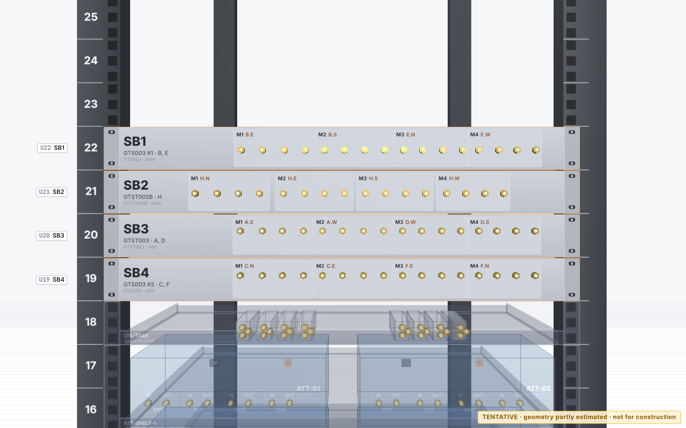
Fit these 4 items
| ID | What it is / part | Where (left = as seen from the FRONT) | Mounting notes | Conf. |
|---|---|---|---|---|
| SB1 | B, E GTS003 · even | U22 · 483 × 44 mm face, 345 mm deep | Siklu 1U Spider box: brushed aluminium front, 16 SMA measured from lab photos (+/-8 mm); depth ~331 body / 345 overall and the rear panel (seen from inside one box) to confirm connectors front: 16 SMA; rear: 5 RJ45, 2 SFP, 2 SMA, 2 USB, 1 DC | estimate |
| SB2 | H GTST002B · even | U21 · 483 × 44 mm face, 345 mm deep | Siklu 1U Spider box: brushed aluminium front, 16 SMA measured from lab photos (+/-8 mm); depth ~331 body / 345 overall and the rear panel (seen from inside one box) to confirm connectors front: 16 SMA; rear: 3 RJ45, 1 SFP, 1 SMA, 1 USB, 1 DC | estimate |
| SB3 | A, D GTST003 · odd | U20 · 483 × 44 mm face, 345 mm deep | Siklu 1U Spider box: brushed aluminium front, 16 SMA measured from lab photos (+/-8 mm); depth ~331 body / 345 overall and the rear panel (seen from inside one box) to confirm connectors front: 16 SMA; rear: 5 RJ45, 2 SFP, 2 SMA, 2 USB, 1 DC | estimate |
| SB4 | C, F GTS003 · odd | U19 · 483 × 44 mm face, 345 mm deep | Siklu 1U Spider box: brushed aluminium front, 16 SMA measured from lab photos (+/-8 mm); depth ~331 body / 345 overall and the rear panel (seen from inside one box) to confirm connectors front: 16 SMA; rear: 5 RJ45, 2 SFP, 2 SMA, 2 USB, 1 DC | estimate |
Front panels: module, sector and tile
Each module (M1-M4) carries one sector; its four tiles T1-T4 run left to right. IF cables land on these tiles in the IF-link steps.
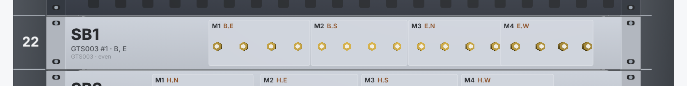
T1T2T3T4T1T2T3T4T1T2T3T4T1T2T3T4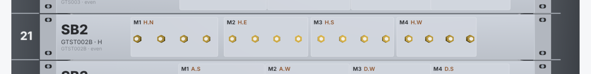
T1T2T3T4T1T2T3T4T1T2T3T4T1T2T3T4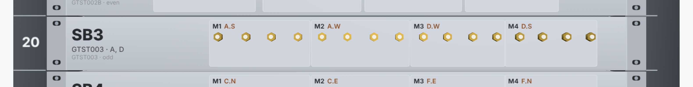
T1T2T3T4T1T2T3T4T1T2T3T4T1T2T3T4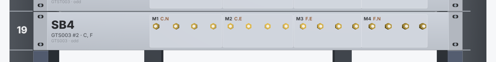
T1T2T3T4T1T2T3T4T1T2T3T4T1T2T3T4Rear panels: node ports by name
The node power (ETH1, from the PoE step), data (SFP+) and GNSS cables land on the rear of the boxes. Straight-on pictures from the rear, cables left out; every port carries its full name and its cable. Seen from the rear, left and right swap: the node that is on the left at the front is on the right here. The rear layout comes from one box seen from inside (open question 1).


Servers and traffic hosts
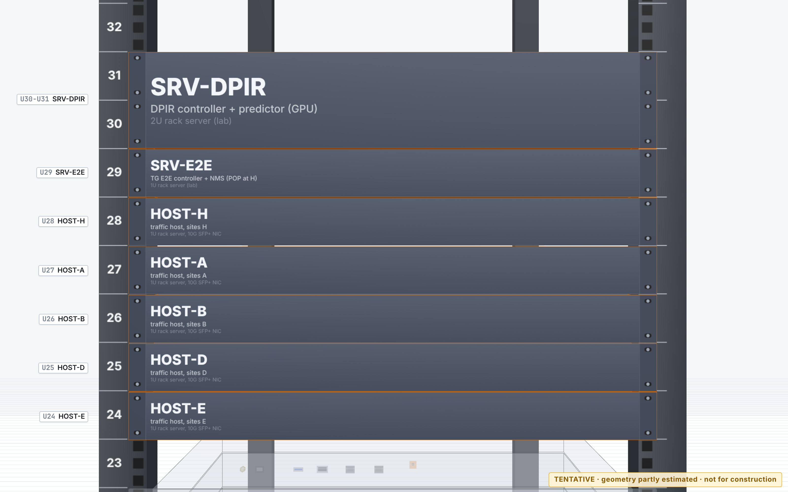
Fit these 7 items
| ID | What it is / part | Where (left = as seen from the FRONT) | Mounting notes | Conf. |
|---|---|---|---|---|
| SRV-DPIR | DPIR controller + predictor (GPU) 2U rack server (lab) | U30-U31 · 483 × 88 mm face, 772 mm deep | lab rack server, stand-in Dell R260 (1U, 497 mm) / R660 (1U, 823 mm) / R760 (2U, 772 mm) connectors rear: 1 RJ45, 1 C14 | estimate |
| SRV-E2E | TG E2E controller + NMS (POP at H) 1U rack server (lab) | U29 · 483 × 44 mm face, 823 mm deep | lab rack server, stand-in Dell R260 (1U, 497 mm) / R660 (1U, 823 mm) / R760 (2U, 772 mm) connectors rear: 1 SFP, 1 RJ45, 1 C14 | estimate |
| HOST-H | traffic host, sites H 1U rack server, 10G SFP+ NIC | U28 · 483 × 44 mm face, 497 mm deep | lab rack server, stand-in Dell R260 (1U, 497 mm) / R660 (1U, 823 mm) / R760 (2U, 772 mm) connectors rear: 1 SFP, 1 RJ45, 1 C14 | estimate |
| HOST-A | traffic host, sites A 1U rack server, 10G SFP+ NIC | U27 · 483 × 44 mm face, 497 mm deep | lab rack server, stand-in Dell R260 (1U, 497 mm) / R660 (1U, 823 mm) / R760 (2U, 772 mm) connectors rear: 1 SFP, 1 RJ45, 1 C14 | estimate |
| HOST-B | traffic host, sites B 1U rack server, 10G SFP+ NIC | U26 · 483 × 44 mm face, 497 mm deep | lab rack server, stand-in Dell R260 (1U, 497 mm) / R660 (1U, 823 mm) / R760 (2U, 772 mm) connectors rear: 1 SFP, 1 RJ45, 1 C14 | estimate |
| HOST-D | traffic host, sites D 1U rack server, 10G SFP+ NIC | U25 · 483 × 44 mm face, 497 mm deep | lab rack server, stand-in Dell R260 (1U, 497 mm) / R660 (1U, 823 mm) / R760 (2U, 772 mm) connectors rear: 1 SFP, 1 RJ45, 1 C14 | estimate |
| HOST-E | traffic host, sites E 1U rack server, 10G SFP+ NIC | U24 · 483 × 44 mm face, 497 mm deep | lab rack server, stand-in Dell R260 (1U, 497 mm) / R660 (1U, 823 mm) / R760 (2U, 772 mm) connectors rear: 1 SFP, 1 RJ45, 1 C14 | estimate |
Switches, cable manager, shelves
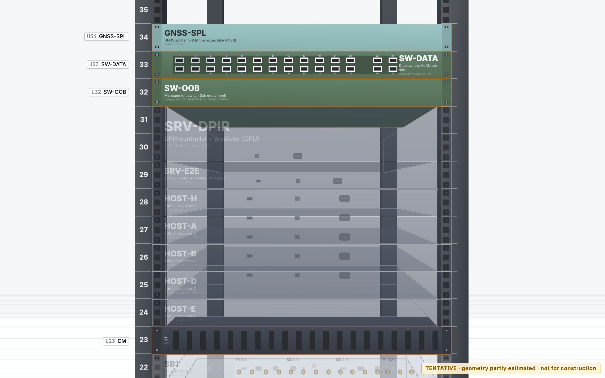
Fit these 4 items
| ID | What it is / part | Where (left = as seen from the FRONT) | Mounting notes | Conf. |
|---|---|---|---|---|
| GNSS-SPL | GNSS splitter 1x8 (if the boxes take GNSS) RMALDCBS1X8 | U34 · 483 × 44 mm face, 216 mm deep | RMALDCBS1X8 1U, 216 mm, 5.4 kg; connectors at the rear assumed connectors rear: 9 SMA, 1 C14 | likely |
| SW-DATA | Data switch, VLAN per site Netgear M4350-24F4V | U33 · 483 × 44 mm face, 400 mm deep | Netgear M4350-24F4V 440 x 43.2 x 400 mm; ports on the front connectors front: 28 SFP; rear: 1 C14 | likely |
| SW-OOB | Management switch (lab equipment) Netgear M4250-26G4XF-PoE+ (GSM4230PX) | U32 · 483 × 44 mm face, 400 mm deep | Netgear GSM4230PX 440 x 43.2 x 400 mm; all ports on Netgear's 'back' face, mounted facing the rack rear connectors rear: 26 RJ45, 4 SFP, 1 C14 | likely |
| CM | Cable manager Panduit NCMHF1 | U23 · 483 × 44 mm face, 95 mm deep | Panduit NCMHF1 1U horizontal cable manager | likely |
Blanking panels
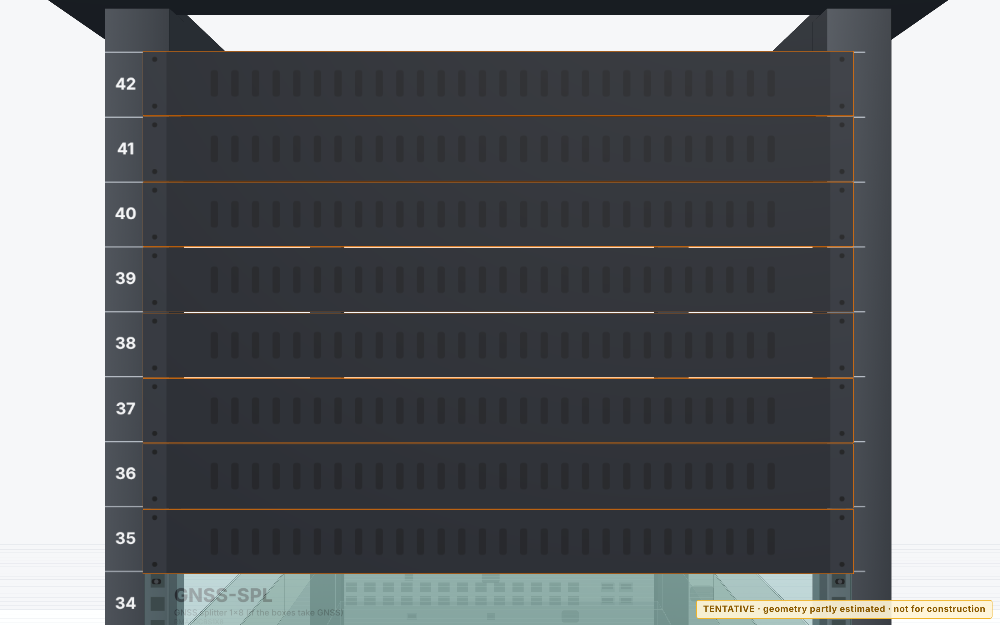
Fit these 8 items
| ID | What it is / part | Where (left = as seen from the FRONT) | Mounting notes | Conf. |
|---|---|---|---|---|
| BLANK-U35 | blanking panel AR8136BLK | U35 · 483 × 44 mm face, 28 mm deep | likely | |
| BLANK-U36 | blanking panel AR8136BLK | U36 · 483 × 44 mm face, 28 mm deep | likely | |
| BLANK-U37 | blanking panel AR8136BLK | U37 · 483 × 44 mm face, 28 mm deep | likely | |
| BLANK-U38 | blanking panel AR8136BLK | U38 · 483 × 44 mm face, 28 mm deep | likely | |
| BLANK-U39 | blanking panel AR8136BLK | U39 · 483 × 44 mm face, 28 mm deep | likely | |
| BLANK-U40 | blanking panel AR8136BLK | U40 · 483 × 44 mm face, 28 mm deep | likely | |
| BLANK-U41 | blanking panel AR8136BLK | U41 · 483 × 44 mm face, 28 mm deep | likely | |
| BLANK-U42 | blanking panel AR8136BLK | U42 · 483 × 44 mm face, 28 mm deep | likely |
Bench table
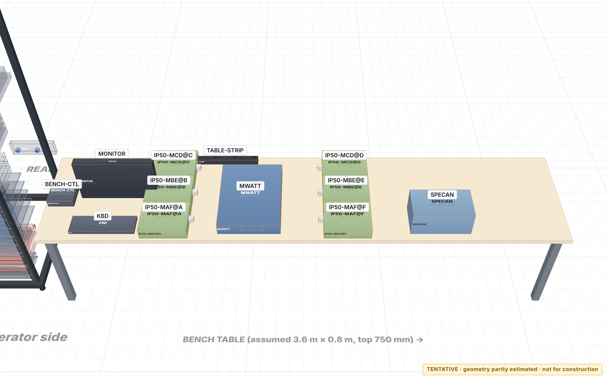
Fit these 18 items
| ID | What it is / part | Where (left = as seen from the FRONT) | Mounting notes | Conf. |
|---|---|---|---|---|
| BENCH-CTL | PC bench controller: run script, ATT / PDU commands, logging (always on) | table: 20 mm from the rack-side end, 310 mm from the front edge | small form-factor PC connectors rear: 1 RJ45, 1 C14, 1 DP, 1 USB | estimate |
| MONITOR | monitor 24-inch monitor (operator station) | table: 240 mm from the rack-side end, 390 mm from the front edge | 24-inch monitor on a stand connectors rear: 1 DP, 1 C14 | estimate |
| KBD | keyboard keyboard + mouse | table: 220 mm from the rack-side end, 60 mm from the front edge | keyboard + mouse connectors rear: 1 USB | estimate |
| MWATT | multi-channel attenuator Keysight J7204B, 4 ch | table: 1220 mm from the rack-side end, 60 mm from the front edge | Keysight J7204B (parts research dims); SMA ports on the front assumed connectors front: 6 SMA; rear: 1 RJ45, 1 C14 | likely |
| IP50-MAF@A | IP-50 radio IP-50, hop MAF at A | table: 700 mm from the rack-side end, 20 mm from the front edge | Ceragon IP-50CX (about 6 kg; size estimate, ceragon.com not reachable) laid flat; waveguide flange on the side toward MWATT connectors rear: 2 RJ45, 1 DC; side: 1 WG carries 1: WGT-MAF-A | estimate |
| IP50-MAF@F | IP-50 radio IP-50, hop MAF at F | table: 1936 mm from the rack-side end, 20 mm from the front edge | Ceragon IP-50CX (about 6 kg; size estimate, ceragon.com not reachable) laid flat; waveguide flange on the side toward MWATT connectors rear: 2 RJ45, 1 DC; side: 1 WG carries 1: WGT-MAF-B | estimate |
| IP50-MBE@B | IP-50 radio IP-50, hop MBE at B | table: 700 mm from the rack-side end, 270 mm from the front edge | Ceragon IP-50CX (about 6 kg; size estimate, ceragon.com not reachable) laid flat; waveguide flange on the side toward MWATT connectors rear: 2 RJ45, 1 DC; side: 1 WG carries 1: WGT-MBE-A | estimate |
| IP50-MBE@E | IP-50 radio IP-50, hop MBE at E | table: 1936 mm from the rack-side end, 270 mm from the front edge | Ceragon IP-50CX (about 6 kg; size estimate, ceragon.com not reachable) laid flat; waveguide flange on the side toward MWATT connectors rear: 2 RJ45, 1 DC; side: 1 WG carries 1: WGT-MBE-B | estimate |
| IP50-MCD@C | IP-50 radio IP-50, hop MCD at C | table: 700 mm from the rack-side end, 520 mm from the front edge | Ceragon IP-50CX (about 6 kg; size estimate, ceragon.com not reachable) laid flat; waveguide flange on the side toward MWATT connectors rear: 2 RJ45, 1 DC; side: 1 WG carries 1: WGT-MCD-A | estimate |
| IP50-MCD@D | IP-50 radio IP-50, hop MCD at D | table: 1936 mm from the rack-side end, 520 mm from the front edge | Ceragon IP-50CX (about 6 kg; size estimate, ceragon.com not reachable) laid flat; waveguide flange on the side toward MWATT connectors rear: 2 RJ45, 1 DC; side: 1 WG carries 1: WGT-MCD-B | estimate |
| SPECAN | spectrum analyser spectrum analyser / power sensor | table: 2520 mm from the rack-side end, 60 mm from the front edge | R&S FPL1026 408 x 186 x 235 mm; RF in (2.92 mm F) at the lower right of the front connectors rear: 1 RJ45, 1 C14 | likely |
| TABLE-STRIP | mains strip bench mains strip, C13 | table: 980 mm from the rack-side end, 730 mm from the front edge | bench mains strip, C13 (part TBC) connectors top: 4 C13 | estimate |
| WGT-MAF-A | waveguide transition Pasternack PEWCA1003 WR-62 to SMA-F (33.3 mm flange); band to confirm | on IP50-MAF@A (on its waveguide flange) | Pasternack PEWCA1003 WR-62 to SMA-F (33.3 mm flange); band to confirm connectors side: 1 WG, 1 SMA | estimate |
| WGT-MAF-B | waveguide transition Pasternack PEWCA1003 WR-62 to SMA-F (33.3 mm flange); band to confirm | on IP50-MAF@F (on its waveguide flange) | Pasternack PEWCA1003 WR-62 to SMA-F (33.3 mm flange); band to confirm connectors side: 1 WG, 1 SMA | estimate |
| WGT-MBE-A | waveguide transition Pasternack PEWCA1003 WR-62 to SMA-F (33.3 mm flange); band to confirm | on IP50-MBE@B (on its waveguide flange) | Pasternack PEWCA1003 WR-62 to SMA-F (33.3 mm flange); band to confirm connectors side: 1 WG, 1 SMA | estimate |
| WGT-MBE-B | waveguide transition Pasternack PEWCA1003 WR-62 to SMA-F (33.3 mm flange); band to confirm | on IP50-MBE@E (on its waveguide flange) | Pasternack PEWCA1003 WR-62 to SMA-F (33.3 mm flange); band to confirm connectors side: 1 WG, 1 SMA | estimate |
| WGT-MCD-A | waveguide transition Pasternack PEWCA1003 WR-62 to SMA-F (33.3 mm flange); band to confirm | on IP50-MCD@C (on its waveguide flange) | Pasternack PEWCA1003 WR-62 to SMA-F (33.3 mm flange); band to confirm connectors side: 1 WG, 1 SMA | estimate |
| WGT-MCD-B | waveguide transition Pasternack PEWCA1003 WR-62 to SMA-F (33.3 mm flange); band to confirm | on IP50-MCD@D (on its waveguide flange) | Pasternack PEWCA1003 WR-62 to SMA-F (33.3 mm flange); band to confirm connectors side: 1 WG, 1 SMA | estimate |
Cable: AC mains
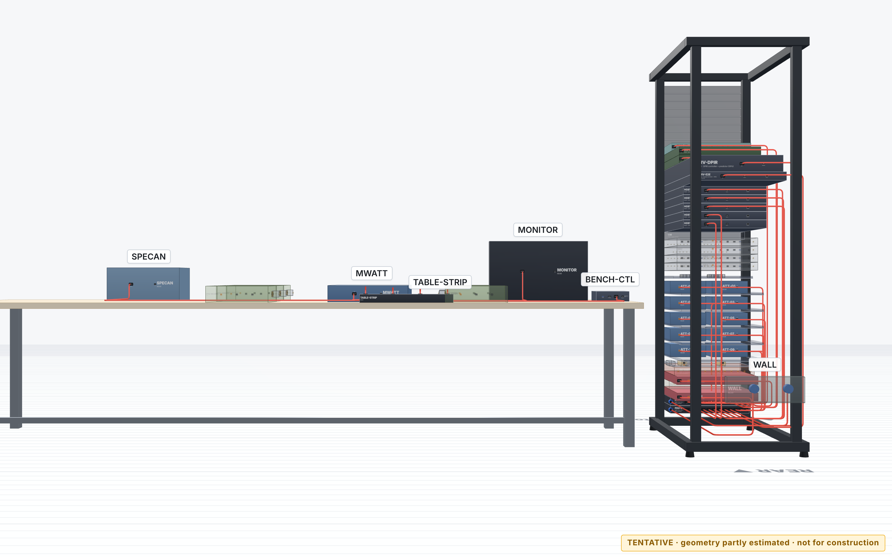

After step 12, rack rear straight on: items and cables of this step highlighted; every U labelled beside the rack.

Where the cable ends land in the rack
Cable ends of this step per rack item, top to bottom. Ends on the bench table are in the table that follows.
| Rack item | U | Cable ends |
|---|---|---|
| GNSS-SPL | U34 | 1 |
| SW-DATA | U33 | 1 |
| SW-OOB | U32 | 1 |
| SRV-DPIR | U30-U31 | 1 |
| SRV-E2E | U29 | 1 |
| HOST-H | U28 | 1 |
| HOST-A | U27 | 1 |
| HOST-B | U26 | 1 |
| HOST-D | U25 | 1 |
| HOST-E | U24 | 1 |
| ATT-SHELF-1 | U16-U17 | 2 |
| ATT-SHELF-2 | U14-U15 | 2 |
| ATT-SHELF-3 | U12-U13 | 2 |
| ATT-SHELF-4 | U10-U11 | 2 |
| ATT-SHELF-5 | U8-U9 | 2 |
| DC-RECT | U5 | 1 |
| DC-RECT2 | U3 | 1 |
| PDU-A | U2 | 13 |
| PDU-B | U1 | 11 |
Connect these 28 cables
| ID | From | To | Part | Length · route mm | VLAN / note |
|---|---|---|---|---|---|
| A001 | WALL.S1 Lab wall socket IEC 60309 16 A | PDU-A.inlet | PDU cord (IEC 60309 16 A plug) | fixed · route 1493 | |
| A002 | WALL.S2 Lab wall socket IEC 60309 16 A | PDU-B.inlet | PDU cord (IEC 60309 16 A plug) | fixed · route 1377 | |
| A003 | PDU-A.O1 | DC-RECT.ac | Eaton Tripp Lite P004-006 C14-C13 lead 1.83 m | 1.83 m · route 943 | |
| A004 | PDU-A.O2 | DC-RECT2.ac | Eaton Tripp Lite P004-006 C14-C13 lead 1.83 m | 1.83 m · route 672 | |
| A005 | PDU-A.O3 | SW-DATA.ac | Eaton Tripp Lite P004-010 C14-C13 lead 3.05 m | 3.05 m · route 2329 | length from the twin route (2329 mm) |
| A006 | PDU-A.O4 | SW-OOB.ac | Eaton Tripp Lite P004-010 C14-C13 lead 3.05 m | 3.05 m · route 2331 | length from the twin route (2331 mm) |
| A007 | PDU-A.O5 | GNSS-SPL.ac | Eaton Tripp Lite P004-010 C14-C13 lead 3.05 m | 3.05 m · route 2282 | length from the twin route (2282 mm) |
| A008 | PDU-A.O6 | ATT-01.ac | Eaton Tripp Lite P004-006 C14-C13 lead 1.83 m | 1.83 m · route 790 | attenuator box power: own adapter, inlet TBC |
| A009 | PDU-A.O7 | ATT-02.ac | Eaton Tripp Lite P004-006 C14-C13 lead 1.83 m | 1.83 m · route 1485 | attenuator box power: own adapter, inlet TBC |
| A010 | PDU-A.O8 | ATT-03.ac | Eaton Tripp Lite P004-006 C14-C13 lead 1.83 m | 1.83 m · route 781 | attenuator box power: own adapter, inlet TBC |
| A011 | PDU-A.O9 | ATT-04.ac | Eaton Tripp Lite P004-006 C14-C13 lead 1.83 m | 1.83 m · route 1488 | attenuator box power: own adapter, inlet TBC |
| A012 | PDU-A.O10 | ATT-05.ac | Eaton Tripp Lite P004-006 C14-C13 lead 1.83 m | 1.83 m · route 1210 | attenuator box power: own adapter, inlet TBC |
| A013 | PDU-A.O11 | ATT-06.ac | Eaton Tripp Lite P004-006 C14-C13 lead 1.83 m | 1.83 m · route 597 | attenuator box power: own adapter, inlet TBC |
| A014 | PDU-A.O12 | ATT-07.ac | Eaton Tripp Lite P004-006 C14-C13 lead 1.83 m | 1.83 m · route 1093 | attenuator box power: own adapter, inlet TBC |
| A015 | PDU-B.O1 | ATT-08.ac | Eaton Tripp Lite P004-006 C14-C13 lead 1.83 m | 1.83 m · route 1058 | attenuator box power: own adapter, inlet TBC |
| A016 | PDU-B.O2 | ATT-09.ac | Eaton Tripp Lite P004-006 C14-C13 lead 1.83 m | 1.83 m · route 780 | attenuator box power: own adapter, inlet TBC |
| A017 | PDU-B.O3 | ATT-10.ac | Eaton Tripp Lite P004-006 C14-C13 lead 1.83 m | 1.83 m · route 1013 | attenuator box power: own adapter, inlet TBC |
| A018 | PDU-B.O4 | SRV-DPIR.ac | Eaton Tripp Lite P004-010 C14-C13 lead 3.05 m | 3.05 m · route 2436 | length from the twin route (2436 mm) |
| A019 | PDU-B.O5 | SRV-E2E.ac | Eaton Tripp Lite P004-010 C14-C13 lead 3.05 m | 3.05 m · route 2576 | length from the twin route (2576 mm) |
| A020 | PDU-B.O6 | HOST-H.ac | Eaton Tripp Lite P004-010 C14-C13 lead 3.05 m | 3.05 m · route 2252 | length from the twin route (2252 mm) |
| A021 | PDU-B.O7 | HOST-A.ac | Eaton Tripp Lite P004-010 C14-C13 lead 3.05 m | 3.05 m · route 2254 | length from the twin route (2254 mm) |
| A022 | PDU-B.O8 | HOST-B.ac | Eaton Tripp Lite P004-010 C14-C13 lead 3.05 m | 3.05 m · route 2255 | length from the twin route (2255 mm) |
| A023 | PDU-B.O9 | HOST-D.ac | Eaton Tripp Lite P004-006 C14-C13 lead 1.83 m | 1.83 m · route 1591 | |
| A024 | PDU-B.O10 | HOST-E.ac | Eaton Tripp Lite P004-006 C14-C13 lead 1.83 m | 1.83 m · route 1526 | |
| A025 | TABLE-STRIP.O1 TABLE-STRIP | BENCH-CTL.ac | Eaton Tripp Lite P004-006 C14-C13 lead 1.83 m | 1.83 m · route 1294 | |
| A026 | TABLE-STRIP.O2 TABLE-STRIP | MONITOR.ac | Eaton Tripp Lite P004-006 C14-C13 lead 1.83 m | 1.83 m · route 1111 | |
| A027 | TABLE-STRIP.O3 TABLE-STRIP | SPECAN.ac | Eaton Tripp Lite P004-010 C14-C13 lead 3.05 m | 3.05 m · route 2147 | length from the twin route (2147 mm) |
| A028 | TABLE-STRIP.O4 TABLE-STRIP | MWATT.ac | Eaton Tripp Lite P004-006 C14-C13 lead 1.83 m | 1.83 m · route 331 | inlet type TBC |
PDU outlets, one by one
Each PDU straight on from the rear, cables left out. Tag = outlet and cable ID, then the device it feeds. The same map is kept in section 5.
PDU-A U2
Raritan PX3-5260R class (1U, 12 x C13, switched, 16 A); fed by A001 from WALL.S1

| Outlet | Feeds | Cable | Lead |
|---|---|---|---|
| O1 | DC-RECT | A003 | 1.83 m |
| O2 | DC-RECT2 | A004 | 1.83 m |
| O3 | SW-DATA | A005 | 3.05 m |
| O4 | SW-OOB | A006 | 3.05 m |
| Outlet | Feeds | Cable | Lead |
|---|---|---|---|
| O5 | GNSS-SPL | A007 | 3.05 m |
| O6 | ATT-01 | A008 | 1.83 m |
| O7 | ATT-02 | A009 | 1.83 m |
| O8 | ATT-03 | A010 | 1.83 m |
| Outlet | Feeds | Cable | Lead |
|---|---|---|---|
| O9 | ATT-04 | A011 | 1.83 m |
| O10 | ATT-05 | A012 | 1.83 m |
| O11 | ATT-06 | A013 | 1.83 m |
| O12 | ATT-07 | A014 | 1.83 m |
PDU-B U1
Raritan PX3-5260R class (1U, 12 x C13, switched, 16 A); fed by A002 from WALL.S2

| Outlet | Feeds | Cable | Lead |
|---|---|---|---|
| O1 | ATT-08 | A015 | 1.83 m |
| O2 | ATT-09 | A016 | 1.83 m |
| O3 | ATT-10 | A017 | 1.83 m |
| O4 | SRV-DPIR | A018 | 3.05 m |
| Outlet | Feeds | Cable | Lead |
|---|---|---|---|
| O5 | SRV-E2E | A019 | 3.05 m |
| O6 | HOST-H | A020 | 3.05 m |
| O7 | HOST-A | A021 | 3.05 m |
| O8 | HOST-B | A022 | 3.05 m |
| Outlet | Feeds | Cable | Lead |
|---|---|---|---|
| O9 | HOST-D | A023 | 1.83 m |
| O10 | HOST-E | A024 | 1.83 m |
| O11 | spare | ||
| O12 | spare |
TABLE-STRIP table
bench mains strip, C13;
| Outlet | Feeds | Cable | Lead |
|---|---|---|---|
| O1 | BENCH-CTL | A025 | 1.83 m |
| O2 | MONITOR | A026 | 1.83 m |
| Outlet | Feeds | Cable | Lead |
|---|---|---|---|
| O3 | SPECAN | A027 | 3.05 m |
| O4 | MWATT | A028 | 1.83 m |
Cable: DC power
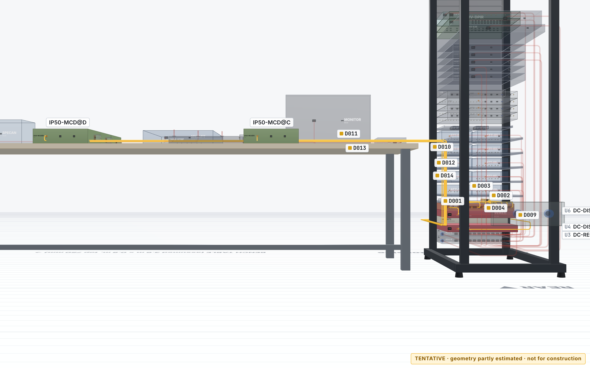

Where the cable ends land in the rack
Cable ends of this step per rack item, top to bottom. Ends on the bench table are in the table that follows.
| Rack item | U | Cable ends |
|---|---|---|
| PA-SHELF | U7 | 7 |
| DC-DIST | U6 | 8 |
| DC-RECT | U5 | 1 |
| DC-DIST2 | U4 | 7 |
| DC-RECT2 | U3 | 1 |
Connect these 15 cables
| ID | From | To | Part | Length · route mm | VLAN / note |
|---|---|---|---|---|---|
| D001 | DC-RECT.bus | DC-DIST.bus | DC bus link 2 x 10 AWG with ring lugs | 0.25 m (cut) · route 205 | 48 V bus |
| D002 | DC-DIST.CB1 | PA-01.dc | Belden 8461 2 x 18 AWG + Phoenix 3200519 ferrules | 0.5 m (cut) · route 270 | feeds node B |
| D003 | DC-DIST.CB2 | PA-02.dc | Belden 8461 2 x 18 AWG + Phoenix 3200519 ferrules | 0.75 m (cut) · route 458 | feeds node E |
| D004 | DC-DIST.CB3 | PA-03.dc | Belden 8461 2 x 18 AWG + Phoenix 3200519 ferrules | 0.25 m (cut) · route 218 | feeds node H |
| D005 | DC-DIST.CB4 | PA-04.dc | Belden 8461 2 x 18 AWG + Phoenix 3200519 ferrules | 0.25 m (cut) · route 192 | feeds node A |
| D006 | DC-DIST.CB5 | PA-05.dc | Belden 8461 2 x 18 AWG + Phoenix 3200519 ferrules | 0.5 m (cut) · route 380 | feeds node D |
| D007 | DC-DIST.CB6 | PA-06.dc | Belden 8461 2 x 18 AWG + Phoenix 3200519 ferrules | 0.25 m (cut) · route 208 | feeds node C |
| D008 | DC-DIST.CB7 | PA-07.dc | Belden 8461 2 x 18 AWG + Phoenix 3200519 ferrules | 0.5 m (cut) · route 328 | feeds node F |
| D009 | DC-RECT2.out | DC-DIST2.bus | DC bus link 2 x 10 AWG with ring lugs (A and B buses) | 1.5 m (cut) · route 1183 | -48 V bus, positive grounded |
| D010 | DC-DIST2.F1 | IP50-MAF@A.dc | Belden 8461 2 x 18 AWG (IP-50 connector TBC) | 3.75 m (cut) · route 3333 | -48 V through a GMT fuse |
| D011 | DC-DIST2.F2 | IP50-MAF@F.dc | Belden 8461 2 x 18 AWG (IP-50 connector TBC) | 5.25 m (cut) · route 4554 | -48 V through a GMT fuse |
| D012 | DC-DIST2.F3 | IP50-MBE@B.dc | Belden 8461 2 x 18 AWG (IP-50 connector TBC) | 3.5 m (cut) · route 3053 | -48 V through a GMT fuse |
| D013 | DC-DIST2.F4 | IP50-MBE@E.dc | Belden 8461 2 x 18 AWG (IP-50 connector TBC) | 4.75 m (cut) · route 4154 | -48 V through a GMT fuse |
| D014 | DC-DIST2.F5 | IP50-MCD@C.dc | Belden 8461 2 x 18 AWG (IP-50 connector TBC) | 3.25 m (cut) · route 2783 | -48 V through a GMT fuse |
| D015 | DC-DIST2.F6 | IP50-MCD@D.dc | Belden 8461 2 x 18 AWG (IP-50 connector TBC) | 4.25 m (cut) · route 3855 | -48 V through a GMT fuse |
DC wiring rules
One convention for both systems (the conductor colours of the Belden 8461 on the drum decide which core is the "other" one: write it on the drum). Check polarity with a meter at every output before a load is connected.
| Where | System | Conductor → terminal | Termination | Tag |
|---|---|---|---|---|
| DC-DIST CBn | +48 V to the node adaptors | Belden 8461 2 × 18 AWG: black core → RTN (0 V); other core (white / red) → +48 V at CBn | ferrule 0.75 mm² Phoenix 3200519 on both cores | red tag both ends |
| DC-DIST2 Fn | -48 V to the IP-50 radios (positive earth) | Belden 8461 2 × 18 AWG: black core → RTN (0 V, earthed); other core → -48 V at Fn (through the GMT fuse) | ferrule 0.75 mm² Phoenix 3200519; radio end: IP-50 DC plug TBC (open question 5) | blue tag both ends |
| D001, D009 | rectifier → distribution bus | 2 × 10 AWG: red / black per the rectifier marking | ring lugs, hole to match the stud: stud size TBC (measure) | same colour rule as its system |
| A-B strap | DC-DIST2 bus A → bus B | short 10 AWG links (or the vendor strap), both poles | ring lugs to match the input studs (TBC) | - |
DC terminals, one by one
Straight-on pictures with the cables left out. Tag = terminal and cable ID, then what it feeds.


Cable: PoE to the nodes
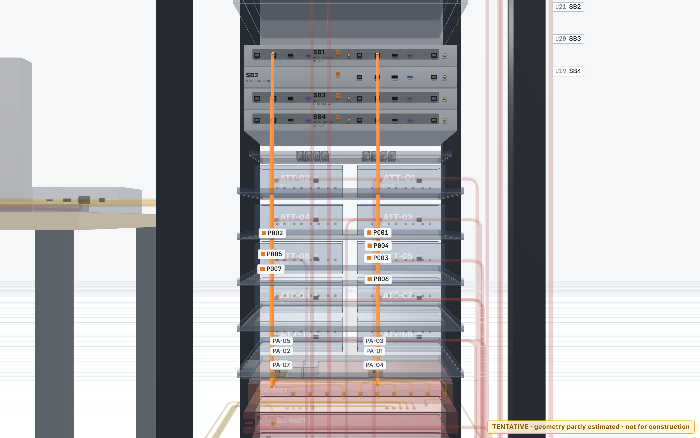
Connect these 7 cables
| ID | From | To | Part | Length · route mm | VLAN / note |
|---|---|---|---|---|---|
| P001 | PA-01.rj45 | SB1.B.ETH1 | Panduit STP6X1MBU Cat6A S/FTP 1 m | 1 m · route 814 | power only (passive adaptor) |
| P002 | PA-02.rj45 | SB1.E.ETH1 | Panduit STP6X1MBU Cat6A S/FTP 1 m | 1 m · route 824 | power only (passive adaptor) |
| P003 | PA-03.rj45 | SB2.H.ETH1 | Panduit STP6X1MBU Cat6A S/FTP 1 m | 1 m · route 789 | power only (passive adaptor) |
| P004 | PA-04.rj45 | SB3.A.ETH1 | Panduit STP6X1MBU Cat6A S/FTP 1 m | 1 m · route 755 | power only (passive adaptor) |
| P005 | PA-05.rj45 | SB3.D.ETH1 | Panduit STP6X1MBU Cat6A S/FTP 1 m | 1 m · route 765 | power only (passive adaptor) |
| P006 | PA-06.rj45 | SB4.C.ETH1 | Panduit STP6X1MBU Cat6A S/FTP 1 m | 1 m · route 730 | power only (passive adaptor) |
| P007 | PA-07.rj45 | SB4.F.ETH1 | Panduit STP6X1MBU Cat6A S/FTP 1 m | 1 m · route 740 | power only (passive adaptor) |
Cable: Data to SW-DATA
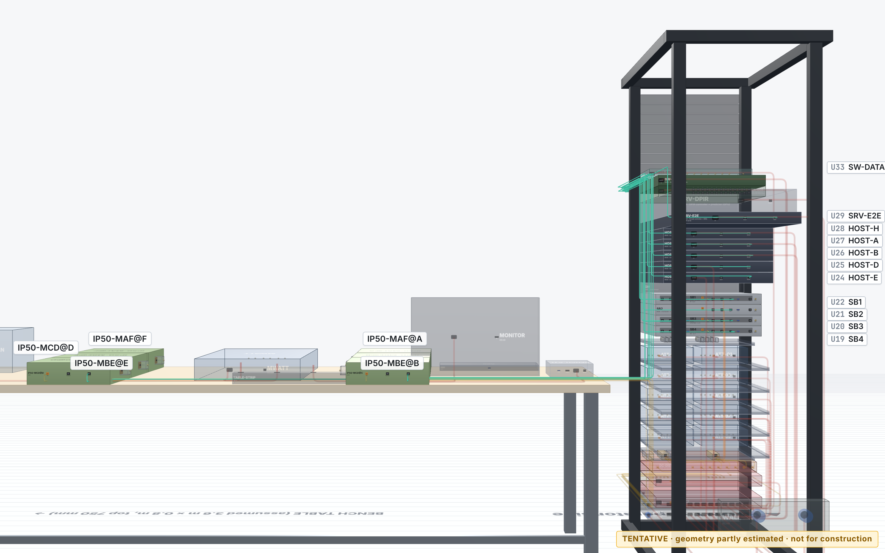
Where the cable ends land in the rack
Cable ends of this step per rack item, top to bottom. Ends on the bench table are in the table that follows.
| Rack item | U | Cable ends |
|---|---|---|
| SW-DATA | U33 | 19 |
| SRV-E2E | U29 | 1 |
| HOST-H | U28 | 1 |
| HOST-A | U27 | 1 |
| HOST-B | U26 | 1 |
| HOST-D | U25 | 1 |
| HOST-E | U24 | 1 |
| SB1 | U22 | 2 |
| SB2 | U21 | 1 |
| SB3 | U20 | 2 |
| SB4 | U19 | 2 |

Connect these 19 cables
| ID | From | To | Part | Length · route mm | VLAN / note |
|---|---|---|---|---|---|
| F001 | SB2.H.SFP+ | SW-DATA.P1 | SFP+ SR at both ends (Siklu AX-SFP+10G-MM / Netgear AXM761) + Panduit FZ2ERLNLNSNM003 OM4 LC-LC 3 m | 3 m · route 1825 | VLAN 101 node H data, in-band management; length from the twin route (1825 mm) |
| F002 | HOST-H.nic10g | SW-DATA.P2 | Netgear AXC763-10000S SFP+ DAC 3 m | 3 m · route 1708 | VLAN 101 traffic host |
| F003 | SRV-E2E.data | SW-DATA.P3 | Netgear AXC763-10000S SFP+ DAC 3 m | 3 m · route 2005 | VLAN 101 TG E2E controller + NMS (POP at H) |
| F004 | SB3.A.SFP+ | SW-DATA.P4 | SFP+ SR at both ends (Siklu AX-SFP+10G-MM / Netgear AXM761) + Panduit FZ2ERLNLNSNM003 OM4 LC-LC 3 m | 3 m · route 1909 | VLAN 102 node A data, in-band management; length from the twin route (1909 mm) |
| F005 | IP50-MAF@A.data | SW-DATA.P5 | SFP+ SR at both ends (IP-50CX SFP+ optic TBC / Netgear AXM761) + Panduit FZ2ERLNLNSNM005 OM4 LC-LC 5 m | 5 m · route 3378 | VLAN 102 hop MAF: IP-50CX 10GbE port (a hop can exceed 1 Gb/s); length from the twin route (3378 mm) |
| F006 | HOST-A.nic10g | SW-DATA.P6 | Netgear AXC763-10000S SFP+ DAC 3 m | 3 m · route 1807 | VLAN 102 traffic host |
| F007 | SB1.B.SFP+ | SW-DATA.P7 | SFP+ SR at both ends (Siklu AX-SFP+10G-MM / Netgear AXM761) + Panduit FZ2ERLNLNSNM003 OM4 LC-LC 3 m | 3 m · route 1862 | VLAN 103 node B data, in-band management; length from the twin route (1862 mm) |
| F008 | IP50-MBE@B.data | SW-DATA.P8 | SFP+ SR at both ends (IP-50CX SFP+ optic TBC / Netgear AXM761) + Panduit FZ2ERLNLNSNM005 OM4 LC-LC 5 m | 5 m · route 3107 | VLAN 103 hop MBE: IP-50CX 10GbE port (a hop can exceed 1 Gb/s); length from the twin route (3107 mm) |
| F009 | HOST-B.nic10g | SW-DATA.P9 | Netgear AXC763-10000S SFP+ DAC 3 m | 3 m · route 1845 | VLAN 103 traffic host |
| F010 | SB4.C.SFP+ | SW-DATA.P10 | SFP+ SR at both ends (Siklu AX-SFP+10G-MM / Netgear AXM761) + Panduit FZ2ERLNLNSNM003 OM4 LC-LC 3 m | 3 m · route 1986 | VLAN 104 node C data, in-band management; length from the twin route (1986 mm) |
| F011 | IP50-MCD@C.data | SW-DATA.P11 | SFP+ SR at both ends (IP-50CX SFP+ optic TBC / Netgear AXM761) + Panduit FZ2ERLNLNSNM005 OM4 LC-LC 5 m | 5 m · route 3075 | VLAN 104 hop MCD: IP-50CX 10GbE port (a hop can exceed 1 Gb/s); length from the twin route (3075 mm) |
| F012 | SB3.D.SFP+ | SW-DATA.P12 | SFP+ SR at both ends (Siklu AX-SFP+10G-MM / Netgear AXM761) + Panduit FZ2ERLNLNSNM002 OM4 LC-LC 2 m | 2 m · route 1754 | VLAN 105 node D data, in-band management |
| F013 | IP50-MCD@D.data | SW-DATA.P13 | SFP+ SR at both ends (IP-50CX SFP+ optic TBC / Netgear AXM761) + Panduit FZ2ERLNLNSNM005 OM4 LC-LC 5 m | 5 m · route 4101 | VLAN 105 hop MCD: IP-50CX 10GbE port (a hop can exceed 1 Gb/s); length from the twin route (4101 mm) |
| F014 | HOST-D.nic10g | SW-DATA.P14 | Netgear AXC763-10000S SFP+ DAC 3 m | 3 m · route 1716 | VLAN 105 traffic host |
| F015 | SB1.E.SFP+ | SW-DATA.P15 | SFP+ SR at both ends (Siklu AX-SFP+10G-MM / Netgear AXM761) + Panduit FZ2ERLNLNSNM002 OM4 LC-LC 2 m | 2 m · route 1467 | VLAN 106 node E data, in-band management |
| F016 | IP50-MBE@E.data | SW-DATA.P16 | SFP+ SR at both ends (IP-50CX SFP+ optic TBC / Netgear AXM761) + Panduit FZ2ERLNLNSNM005 OM4 LC-LC 5 m | 5 m · route 4194 | VLAN 106 hop MBE: IP-50CX 10GbE port (a hop can exceed 1 Gb/s); length from the twin route (4194 mm) |
| F017 | HOST-E.nic10g | SW-DATA.P17 | Netgear AXC763-10000S SFP+ DAC 3 m | 3 m · route 1754 | VLAN 106 traffic host |
| F018 | SB4.F.SFP+ | SW-DATA.P18 | SFP+ SR at both ends (Siklu AX-SFP+10G-MM / Netgear AXM761) + Panduit FZ2ERLNLNSNM002 OM4 LC-LC 2 m | 2 m · route 1591 | VLAN 107 node F data, in-band management |
| F019 | IP50-MAF@F.data | SW-DATA.P19 | SFP+ SR at both ends (IP-50CX SFP+ optic TBC / Netgear AXM761) + Panduit FZ2ERLNLNSNM005 OM4 LC-LC 5 m | 5 m · route 4490 | VLAN 107 hop MAF: IP-50CX 10GbE port (a hop can exceed 1 Gb/s); length from the twin route (4490 mm) |
SW-DATA ports as they sit on the switch

Mounting. SW-DATA: ears on the FRONT posts (the usual way), port cages at the front rail plane, U33. Odd ports in the top row, even ports below; cage numbers as printed on the switch (TBC: open question 7).
Cable: Management to SW-OOB
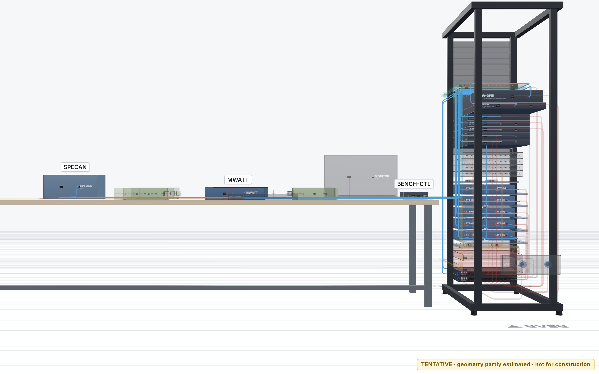

After step 16, rack rear straight on: items and cables of this step highlighted; every U labelled beside the rack.

Where the cable ends land in the rack
Cable ends of this step per rack item, top to bottom. Ends on the bench table are in the table that follows.
| Rack item | U | Cable ends |
|---|---|---|
| SW-OOB | U32 | 22 |
| SRV-DPIR | U30-U31 | 1 |
| SRV-E2E | U29 | 1 |
| HOST-H | U28 | 1 |
| HOST-A | U27 | 1 |
| HOST-B | U26 | 1 |
| HOST-D | U25 | 1 |
| HOST-E | U24 | 1 |
| ATT-SHELF-1 | U16-U17 | 2 |
| ATT-SHELF-2 | U14-U15 | 2 |
| ATT-SHELF-3 | U12-U13 | 2 |
| ATT-SHELF-4 | U10-U11 | 2 |
| ATT-SHELF-5 | U8-U9 | 2 |
| PDU-A | U2 | 1 |
| PDU-B | U1 | 1 |
Connect these 22 cables
| ID | From | To | Part | Length · route mm | VLAN / note |
|---|---|---|---|---|---|
| E001 | HOST-H.mgmt | SW-OOB.P1 | Panduit STP6X2MBU Cat6A S/FTP 2 m | 2 m · route 1047 | VLAN 100 traffic host control; length from the twin route (1047 mm) |
| E002 | HOST-A.mgmt | SW-OOB.P2 | Panduit STP6X2MBU Cat6A S/FTP 2 m | 2 m · route 1094 | VLAN 100 traffic host control; length from the twin route (1094 mm) |
| E003 | HOST-B.mgmt | SW-OOB.P3 | Panduit STP6X2MBU Cat6A S/FTP 2 m | 2 m · route 1149 | VLAN 100 traffic host control; length from the twin route (1149 mm) |
| E004 | HOST-D.mgmt | SW-OOB.P4 | Panduit STP6X2MBU Cat6A S/FTP 2 m | 2 m · route 1196 | VLAN 100 traffic host control; length from the twin route (1196 mm) |
| E005 | HOST-E.mgmt | SW-OOB.P5 | Panduit STP6X2MBU Cat6A S/FTP 2 m | 2 m · route 1251 | VLAN 100 traffic host control; length from the twin route (1251 mm) |
| E006 | SRV-DPIR.mgmt | SW-OOB.P6 | Panduit STP6X1MBU Cat6A S/FTP 1 m | 1 m · route 540 | VLAN 100 server management; length from the twin route (540 mm) |
| E007 | SRV-E2E.mgmt | SW-OOB.P7 | Panduit STP6X2MBU Cat6A S/FTP 2 m | 2 m · route 1368 | VLAN 100 server management; length from the twin route (1368 mm) |
| E008 | BENCH-CTL.mgmt | SW-OOB.P8 | Panduit STP6X3MBU Cat6A S/FTP 3 m | 3 m · route 1825 | VLAN 100 server management |
| E009 | ATT-01.lan | SW-OOB.P9 | Panduit STP6X3MBU Cat6A S/FTP 3 m | 3 m · route 1847 | VLAN 100 attenuator control, SCPI over TCP; length from the twin route (1847 mm) |
| E010 | ATT-02.lan | SW-OOB.P10 | Panduit STP6X2MBU Cat6A S/FTP 2 m | 2 m · route 1614 | VLAN 100 attenuator control, SCPI over TCP |
| E011 | ATT-03.lan | SW-OOB.P11 | Panduit STP6X3MBU Cat6A S/FTP 3 m | 3 m · route 1949 | VLAN 100 attenuator control, SCPI over TCP; length from the twin route (1949 mm) |
| E012 | ATT-04.lan | SW-OOB.P12 | Panduit STP6X2MBU Cat6A S/FTP 2 m | 2 m · route 1716 | VLAN 100 attenuator control, SCPI over TCP |
| E013 | ATT-05.lan | SW-OOB.P13 | Panduit STP6X3MBU Cat6A S/FTP 3 m | 3 m · route 1931 | VLAN 100 attenuator control, SCPI over TCP; length from the twin route (1931 mm) |
| E014 | ATT-06.lan | SW-OOB.P14 | Panduit STP6X2MBU Cat6A S/FTP 2 m | 2 m · route 1698 | VLAN 100 attenuator control, SCPI over TCP |
| E015 | ATT-07.lan | SW-OOB.P15 | Panduit STP6X3MBU Cat6A S/FTP 3 m | 3 m · route 2033 | VLAN 100 attenuator control, SCPI over TCP; length from the twin route (2033 mm) |
| E016 | ATT-08.lan | SW-OOB.P16 | Panduit STP6X2MBU Cat6A S/FTP 2 m | 2 m · route 1800 | VLAN 100 attenuator control, SCPI over TCP |
| E017 | ATT-09.lan | SW-OOB.P17 | Panduit STP6X3MBU Cat6A S/FTP 3 m | 3 m · route 2087 | VLAN 100 attenuator control, SCPI over TCP; length from the twin route (2087 mm) |
| E018 | ATT-10.lan | SW-OOB.P18 | Panduit STP6X2MBU Cat6A S/FTP 2 m | 2 m · route 1453 | VLAN 100 attenuator control, SCPI over TCP |
| E019 | MWATT.lan | SW-OOB.P19 | Panduit STP6X5MBU Cat6A S/FTP 5 m | 5 m · route 2944 | VLAN 100 J7204B control (LAN); length from the twin route (2944 mm) |
| E020 | PDU-A.net | SW-OOB.P20 | Panduit STP6X3MBU Cat6A S/FTP 3 m | 3 m · route 2305 | VLAN 100 PDU management, outlet switching; length from the twin route (2305 mm) |
| E021 | PDU-B.net | SW-OOB.P21 | Panduit STP6X3MBU Cat6A S/FTP 3 m | 3 m · route 2370 | VLAN 100 PDU management, outlet switching; length from the twin route (2370 mm) |
| E022 | SPECAN.lan | SW-OOB.P22 | Panduit STP6X7MBU Cat6A S/FTP 7 m | 7 m · route 4561 | VLAN 100 analyser; length from the twin route (4561 mm) |
SW-OOB ports as they sit on the switch

Mounting. SW-OOB: ears on the FRONT posts, body reaching 400 mm back; its ports face the REAR, 400 mm behind the front rail (500 mm in front of the rear posts): reach in from the rear. Alternative if the lab prefers: ears on the REAR posts, ports flush with the rear (TBC: open question 7). Odd ports top row, even below; seen from the rear port 1 is on the RIGHT.
Cable: GNSS
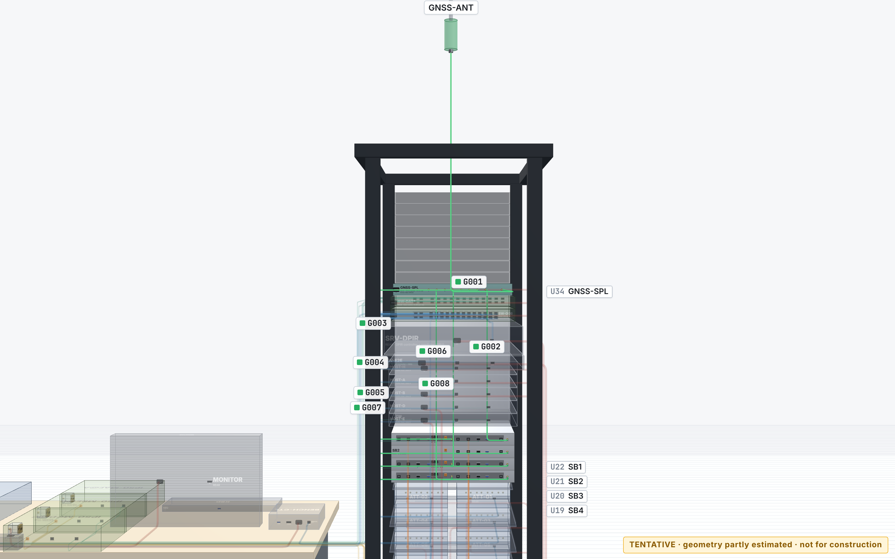
Where the cable ends land in the rack
Cable ends of this step per rack item, top to bottom. Ends on the bench table are in the table that follows.
| Rack item | U | Cable ends |
|---|---|---|
| GNSS-SPL | U34 | 8 |
| SB1 | U22 | 2 |
| SB2 | U21 | 1 |
| SB3 | U20 | 2 |
| SB4 | U19 | 2 |
Connect these 8 cables
| ID | From | To | Part | Length · route mm | VLAN / note |
|---|---|---|---|---|---|
| G001 | GNSS-ANT | GNSS-SPL.in | LMR-400 coax + surge arrestor (part TBC) | site · route 1595 | |
| G002 | GNSS-SPL.out1 | SB1.B.GNSS | RG-316 SMA coax 1 m (part TBC) | 1 m · route 795 | only if the node's rear SMA is a GNSS input (TBC) |
| G003 | GNSS-SPL.out2 | SB1.E.GNSS | RG-316 SMA coax 2 m (part TBC) | 2 m · route 1384 | only if the node's rear SMA is a GNSS input (TBC) |
| G004 | GNSS-SPL.out3 | SB2.H.GNSS | RG-316 SMA coax 2 m (part TBC) | 2 m · route 1613 | only if the node's rear SMA is a GNSS input (TBC) |
| G005 | GNSS-SPL.out4 | SB3.A.GNSS | RG-316 SMA coax 2 m (part TBC) | 2 m · route 1643 | only if the node's rear SMA is a GNSS input (TBC) |
| G006 | GNSS-SPL.out5 | SB3.D.GNSS | RG-316 SMA coax 1 m (part TBC) | 1 m · route 856 | only if the node's rear SMA is a GNSS input (TBC) |
| G007 | GNSS-SPL.out6 | SB4.C.GNSS | RG-316 SMA coax 2 m (part TBC) | 2 m · route 1660 | only if the node's rear SMA is a GNSS input (TBC) |
| G008 | GNSS-SPL.out7 | SB4.F.GNSS | RG-316 SMA coax 2 m (part TBC) | 2 m · route 971 | only if the node's rear SMA is a GNSS input (TBC) |
GNSS-SPL rear, port by port

Antenna. GNSS-ANT (101898-00 (roof); lead via surge arrestor): roof or window mount with a clear view of the sky (site work); the lead comes down to the rack through the surge arrestor, whose earth lug goes to the building earth bar with a short, straight lead (size per the arrestor datasheet, TBC).
Cable: Operator station
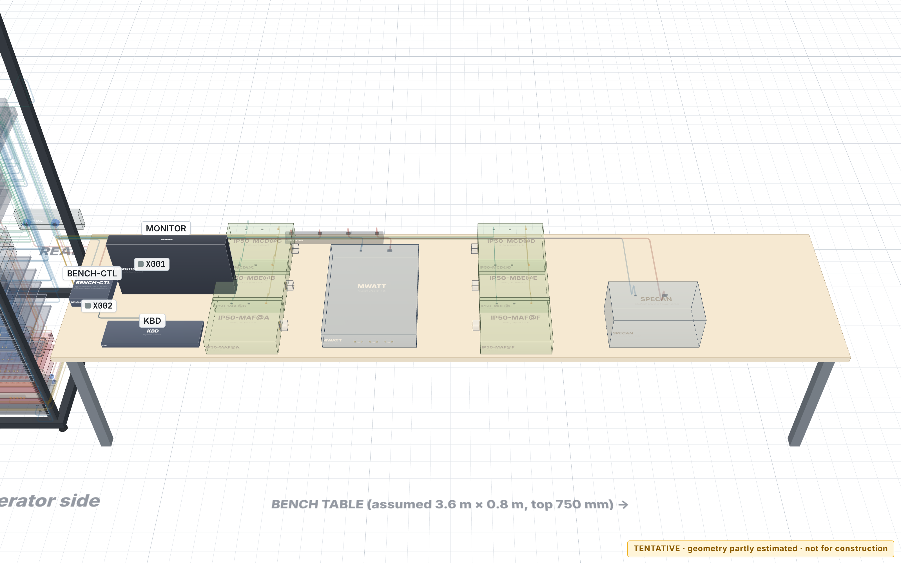
Connect these 2 cables
| ID | From | To | Part | Length · route mm | VLAN / note |
|---|---|---|---|---|---|
| X001 | BENCH-CTL.video | MONITOR.in | DisplayPort / HDMI cable 1.8 m (part TBC) | 1.8 m · route 558 | operator station |
| X002 | KBD.usb | BENCH-CTL.usb | USB keyboard + mouse (cables attached) | 1.5 m · route 646 | operator station |
IF link THA (ATT-01)
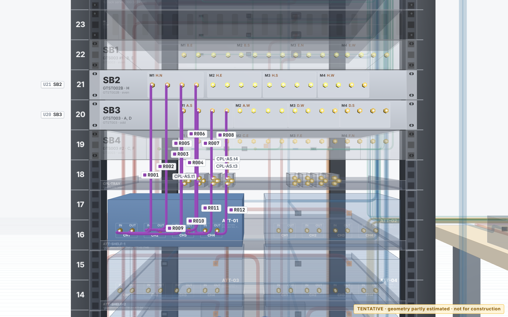
Tile mapping: tile i → ATT-01 channel i
From the A-side tile through the attenuator to the B-side tile; passive parts are named with the ports used. 3D close-up: poc2_renders/link_THA.png (or search R001 in the twin and press "Trace signal").
| Tile | A side: tile, sector | A path | Attenuator | B path | B side: tile, sector |
|---|---|---|---|---|---|
| 1 | SB2.M1.T1 H.N | R001 | ATT-01 CH1 in→out | R009 → CPL-AS.t1 (THRU→IN) → R005 | SB3.M1.T1 A.S |
| 2 | SB2.M1.T2 H.N | R002 | ATT-01 CH2 in→out | R010 → CPL-AS.t2 (THRU→IN) → R006 | SB3.M1.T2 A.S |
| 3 | SB2.M1.T3 H.N | R003 | ATT-01 CH3 in→out | R011 → CPL-AS.t3 (THRU→IN) → R007 | SB3.M1.T3 A.S |
| 4 | SB2.M1.T4 H.N | R004 | ATT-01 CH4 in→out | R012 → CPL-AS.t4 (THRU→IN) → R008 | SB3.M1.T4 A.S |
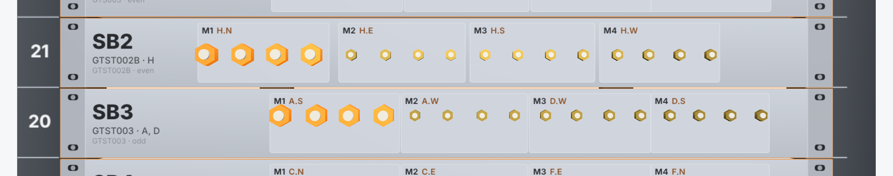
A1A2A3A4B1B2B3B4Connect these 12 cables
| ID | From | To | Part | Length · route mm | VLAN / note |
|---|---|---|---|---|---|
| R001 | SB2.M1.T1 | ATT-01.ch1.in | Mini-Circuits CBL-2FT-SMSM+ | 0.61 m · route 313 | THA H.N tile 1; span 4U, needs 0.37 m |
| R002 | SB2.M1.T2 | ATT-01.ch2.in | Mini-Circuits CBL-2FT-SMSM+ | 0.61 m · route 293 | THA H.N tile 2; span 4U, needs 0.37 m |
| R003 | SB2.M1.T3 | ATT-01.ch3.in | Mini-Circuits CBL-2FT-SMSM+ | 0.61 m · route 272 | THA H.N tile 3; span 4U, needs 0.37 m |
| R004 | SB2.M1.T4 | ATT-01.ch4.in | Mini-Circuits CBL-2FT-SMSM+ | 0.61 m · route 273 | THA H.N tile 4; span 4U, needs 0.37 m |
| R005 | SB3.M1.T1 | CPL-AS.t1.IN | Mini-Circuits CBL-1FT-SMSM+ | 0.30 m · route 152 | THA A.S tile 1: module to coupler IN; span 2U, needs 0.19 m |
| R006 | SB3.M1.T2 | CPL-AS.t2.IN | Mini-Circuits CBL-1FT-SMSM+ | 0.30 m · route 152 | THA A.S tile 2: module to coupler IN; span 2U, needs 0.19 m |
| R007 | SB3.M1.T3 | CPL-AS.t3.IN | Mini-Circuits CBL-1FT-SMSM+ | 0.30 m · route 152 | THA A.S tile 3: module to coupler IN; span 2U, needs 0.19 m |
| R008 | SB3.M1.T4 | CPL-AS.t4.IN | Mini-Circuits CBL-1FT-SMSM+ | 0.30 m · route 152 | THA A.S tile 4: module to coupler IN; span 2U, needs 0.19 m |
| R009 | CPL-AS.t1.THRU | ATT-01.ch1.out | Mini-Circuits CBL-1FT-SMSM+ | 0.30 m · route 230 | THA tile 1; span 1U, needs 0.26 m |
| R010 | CPL-AS.t2.THRU | ATT-01.ch2.out | Mini-Circuits CBL-1FT-SMSM+ | 0.30 m · route 210 | THA tile 2; span 1U, needs 0.26 m |
| R011 | CPL-AS.t3.THRU | ATT-01.ch3.out | Mini-Circuits CBL-1FT-SMSM+ | 0.30 m · route 188 | THA tile 3; span 1U, needs 0.26 m |
| R012 | CPL-AS.t4.THRU | ATT-01.ch4.out | Mini-Circuits CBL-1FT-SMSM+ | 0.30 m · route 167 | THA tile 4; span 1U, needs 0.26 m |
IF link TAB (ATT-02)
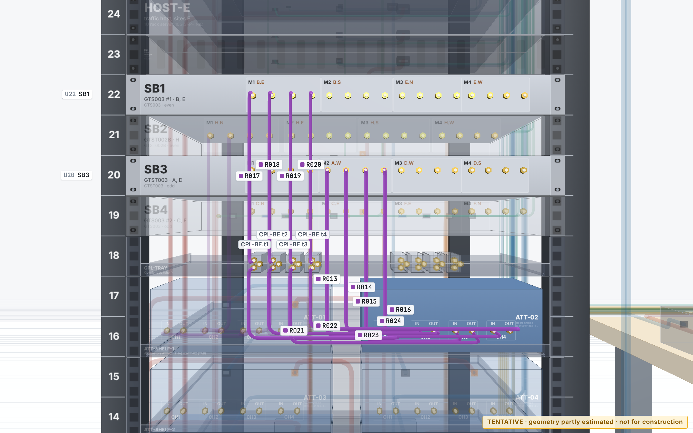
Tile mapping: tile i → ATT-02 channel i
From the A-side tile through the attenuator to the B-side tile; passive parts are named with the ports used. 3D close-up: poc2_renders/link_TAB.png (or search R013 in the twin and press "Trace signal").
| Tile | A side: tile, sector | A path | Attenuator | B path | B side: tile, sector |
|---|---|---|---|---|---|
| 1 | SB3.M2.T1 A.W | R013 | ATT-02 CH1 in→out | R021 → CPL-BE.t1 (THRU→IN) → R017 | SB1.M1.T1 B.E |
| 2 | SB3.M2.T2 A.W | R014 | ATT-02 CH2 in→out | R022 → CPL-BE.t2 (THRU→IN) → R018 | SB1.M1.T2 B.E |
| 3 | SB3.M2.T3 A.W | R015 | ATT-02 CH3 in→out | R023 → CPL-BE.t3 (THRU→IN) → R019 | SB1.M1.T3 B.E |
| 4 | SB3.M2.T4 A.W | R016 | ATT-02 CH4 in→out | R024 → CPL-BE.t4 (THRU→IN) → R020 | SB1.M1.T4 B.E |
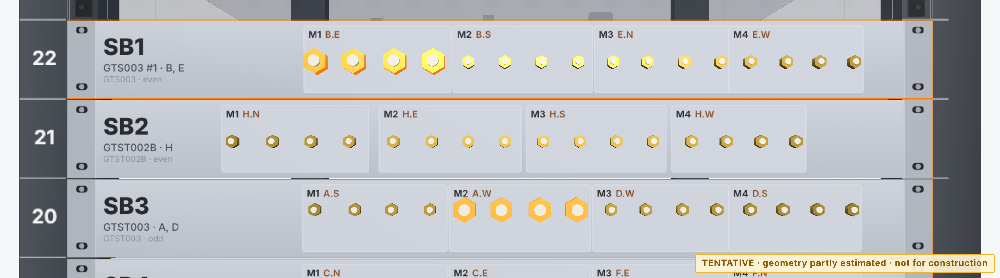
A1A2A3A4B1B2B3B4Connect these 12 cables
| ID | From | To | Part | Length · route mm | VLAN / note |
|---|---|---|---|---|---|
| R013 | SB3.M2.T1 | ATT-02.ch1.in | Mini-Circuits CBL-2FT-SMSM+ | 0.61 m · route 311 | TAB A.W tile 1; span 3U, needs 0.47 m |
| R014 | SB3.M2.T2 | ATT-02.ch2.in | Mini-Circuits CBL-2FT-SMSM+ | 0.61 m · route 333 | TAB A.W tile 2; span 3U, needs 0.47 m |
| R015 | SB3.M2.T3 | ATT-02.ch3.in | Mini-Circuits CBL-2FT-SMSM+ | 0.61 m · route 354 | TAB A.W tile 3; span 3U, needs 0.47 m |
| R016 | SB3.M2.T4 | ATT-02.ch4.in | Mini-Circuits CBL-2FT-SMSM+ | 0.61 m · route 376 | TAB A.W tile 4; span 3U, needs 0.47 m |
| R017 | SB1.M1.T1 | CPL-BE.t1.IN | Mini-Circuits CBL-1FT-SMSM+ | 0.30 m · route 263 | TAB B.E tile 1: module to coupler IN; span 4U, needs 0.28 m |
| R018 | SB1.M1.T2 | CPL-BE.t2.IN | Mini-Circuits CBL-1FT-SMSM+ | 0.30 m · route 263 | TAB B.E tile 2: module to coupler IN; span 4U, needs 0.28 m |
| R019 | SB1.M1.T3 | CPL-BE.t3.IN | Mini-Circuits CBL-1FT-SMSM+ | 0.30 m · route 263 | TAB B.E tile 3: module to coupler IN; span 4U, needs 0.28 m |
| R020 | SB1.M1.T4 | CPL-BE.t4.IN | Mini-Circuits CBL-1FT-SMSM+ | 0.30 m · route 263 | TAB B.E tile 4: module to coupler IN; span 4U, needs 0.28 m |
| R021 | CPL-BE.t1.THRU | ATT-02.ch1.out | Mini-Circuits CBL-2FT-SMSM+ | 0.61 m · route 338 | TAB tile 1; span 1U, needs 0.49 m |
| R022 | CPL-BE.t2.THRU | ATT-02.ch2.out | Mini-Circuits CBL-2FT-SMSM+ | 0.61 m · route 359 | TAB tile 2; span 1U, needs 0.49 m |
| R023 | CPL-BE.t3.THRU | ATT-02.ch3.out | Mini-Circuits CBL-2FT-SMSM+ | 0.61 m · route 379 | TAB tile 3; span 1U, needs 0.49 m |
| R024 | CPL-BE.t4.THRU | ATT-02.ch4.out | Mini-Circuits CBL-2FT-SMSM+ | 0.61 m · route 400 | TAB tile 4; span 1U, needs 0.49 m |
IF link TBC (ATT-03)
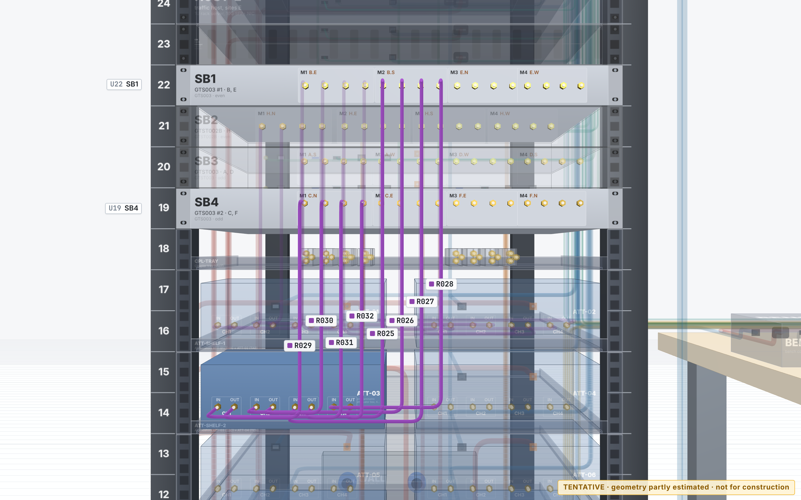
Tile mapping: tile i → ATT-03 channel i
From the A-side tile through the attenuator to the B-side tile; passive parts are named with the ports used. 3D close-up: poc2_renders/link_TBC.png (or search R025 in the twin and press "Trace signal").
| Tile | A side: tile, sector | A path | Attenuator | B path | B side: tile, sector |
|---|---|---|---|---|---|
| 1 | SB1.M2.T1 B.S | R025 | ATT-03 CH1 in→out | R029 | SB4.M1.T1 C.N |
| 2 | SB1.M2.T2 B.S | R026 | ATT-03 CH2 in→out | R030 | SB4.M1.T2 C.N |
| 3 | SB1.M2.T3 B.S | R027 | ATT-03 CH3 in→out | R031 | SB4.M1.T3 C.N |
| 4 | SB1.M2.T4 B.S | R028 | ATT-03 CH4 in→out | R032 | SB4.M1.T4 C.N |
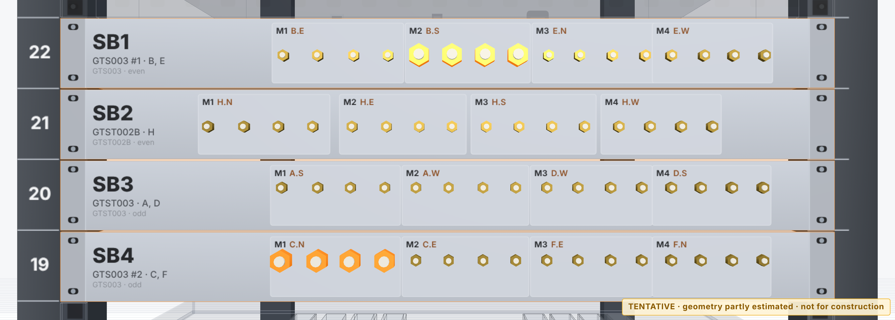
A1A2A3A4B1B2B3B4Connect these 8 cables
| ID | From | To | Part | Length · route mm | VLAN / note |
|---|---|---|---|---|---|
| R025 | SB1.M2.T1 | ATT-03.ch1.in | Mini-Circuits CBL-3FT-SMSM+ | 0.91 m · route 634 | TBC B.S tile 1; span 7U, needs 0.53 m |
| R026 | SB1.M2.T2 | ATT-03.ch2.in | Mini-Circuits CBL-3FT-SMSM+ | 0.91 m · route 612 | TBC B.S tile 2; span 7U, needs 0.53 m |
| R027 | SB1.M2.T3 | ATT-03.ch3.in | Mini-Circuits CBL-3FT-SMSM+ | 0.91 m · route 590 | TBC B.S tile 3; span 7U, needs 0.53 m |
| R028 | SB1.M2.T4 | ATT-03.ch4.in | Mini-Circuits CBL-3FT-SMSM+ | 0.91 m · route 568 | TBC B.S tile 4; span 7U, needs 0.53 m |
| R029 | SB4.M1.T1 | ATT-03.ch1.out | Mini-Circuits CBL-2FT-SMSM+ | 0.61 m · route 417 | TBC C.N tile 1; span 4U, needs 0.39 m |
| R030 | SB4.M1.T2 | ATT-03.ch2.out | Mini-Circuits CBL-2FT-SMSM+ | 0.61 m · route 397 | TBC C.N tile 2; span 4U, needs 0.39 m |
| R031 | SB4.M1.T3 | ATT-03.ch3.out | Mini-Circuits CBL-2FT-SMSM+ | 0.61 m · route 375 | TBC C.N tile 3; span 4U, needs 0.39 m |
| R032 | SB4.M1.T4 | ATT-03.ch4.out | Mini-Circuits CBL-2FT-SMSM+ | 0.61 m · route 354 | TBC C.N tile 4; span 4U, needs 0.39 m |
IF link TCH (ATT-04)
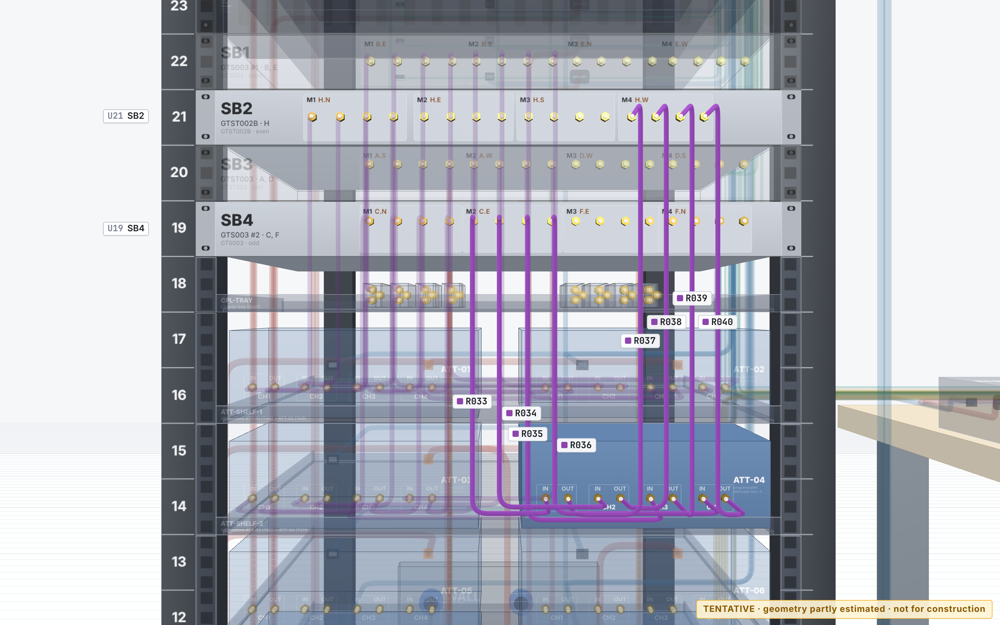
Tile mapping: tile i → ATT-04 channel i
From the A-side tile through the attenuator to the B-side tile; passive parts are named with the ports used. 3D close-up: poc2_renders/link_TCH.png (or search R033 in the twin and press "Trace signal").
| Tile | A side: tile, sector | A path | Attenuator | B path | B side: tile, sector |
|---|---|---|---|---|---|
| 1 | SB4.M2.T1 C.E | R033 | ATT-04 CH1 in→out | R037 | SB2.M4.T1 H.W |
| 2 | SB4.M2.T2 C.E | R034 | ATT-04 CH2 in→out | R038 | SB2.M4.T2 H.W |
| 3 | SB4.M2.T3 C.E | R035 | ATT-04 CH3 in→out | R039 | SB2.M4.T3 H.W |
| 4 | SB4.M2.T4 C.E | R036 | ATT-04 CH4 in→out | R040 | SB2.M4.T4 H.W |
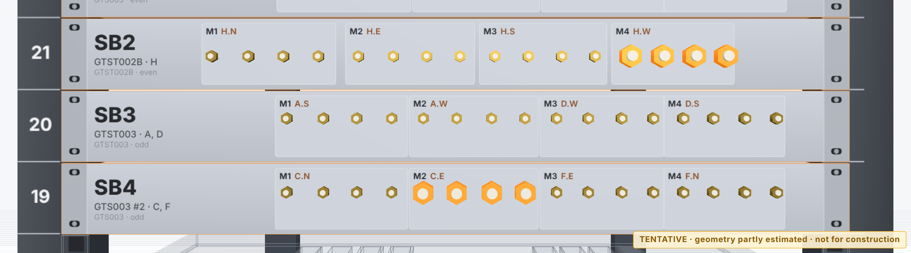
A1A2A3A4B1B2B3B4Connect these 8 cables
| ID | From | To | Part | Length · route mm | VLAN / note |
|---|---|---|---|---|---|
| R033 | SB4.M2.T1 | ATT-04.ch1.in | Mini-Circuits CBL-2FT-SMSM+ | 0.61 m · route 406 | TCH C.E tile 1; span 4U, needs 0.51 m |
| R034 | SB4.M2.T2 | ATT-04.ch2.in | Mini-Circuits CBL-2FT-SMSM+ | 0.61 m · route 428 | TCH C.E tile 2; span 4U, needs 0.51 m |
| R035 | SB4.M2.T3 | ATT-04.ch3.in | Mini-Circuits CBL-2FT-SMSM+ | 0.61 m · route 449 | TCH C.E tile 3; span 4U, needs 0.51 m |
| R036 | SB4.M2.T4 | ATT-04.ch4.in | Mini-Circuits CBL-2FT-SMSM+ | 0.61 m · route 471 | TCH C.E tile 4; span 4U, needs 0.51 m |
| R037 | SB2.M4.T1 | ATT-04.ch1.out | Mini-Circuits CBL-2FT-SMSM+ | 0.61 m · route 490 | TCH H.W tile 1; span 6U, needs 0.43 m |
| R038 | SB2.M4.T2 | ATT-04.ch2.out | Mini-Circuits CBL-2FT-SMSM+ | 0.61 m · route 467 | TCH H.W tile 2; span 6U, needs 0.43 m |
| R039 | SB2.M4.T3 | ATT-04.ch3.out | Mini-Circuits CBL-2FT-SMSM+ | 0.61 m · route 444 | TCH H.W tile 3; span 6U, needs 0.43 m |
| R040 | SB2.M4.T4 | ATT-04.ch4.out | Mini-Circuits CBL-2FT-SMSM+ | 0.61 m · route 461 | TCH H.W tile 4; span 6U, needs 0.43 m |
IF link THD (ATT-05)
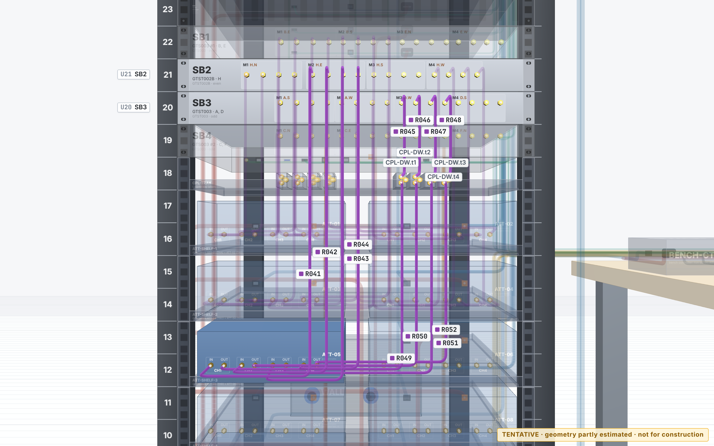
Tile mapping: tile i → ATT-05 channel i
From the A-side tile through the attenuator to the B-side tile; passive parts are named with the ports used. 3D close-up: poc2_renders/link_THD.png (or search R041 in the twin and press "Trace signal").
| Tile | A side: tile, sector | A path | Attenuator | B path | B side: tile, sector |
|---|---|---|---|---|---|
| 1 | SB2.M2.T1 H.E | R041 | ATT-05 CH1 in→out | R049 → CPL-DW.t1 (THRU→IN) → R045 | SB3.M3.T1 D.W |
| 2 | SB2.M2.T2 H.E | R042 | ATT-05 CH2 in→out | R050 → CPL-DW.t2 (THRU→IN) → R046 | SB3.M3.T2 D.W |
| 3 | SB2.M2.T3 H.E | R043 | ATT-05 CH3 in→out | R051 → CPL-DW.t3 (THRU→IN) → R047 | SB3.M3.T3 D.W |
| 4 | SB2.M2.T4 H.E | R044 | ATT-05 CH4 in→out | R052 → CPL-DW.t4 (THRU→IN) → R048 | SB3.M3.T4 D.W |
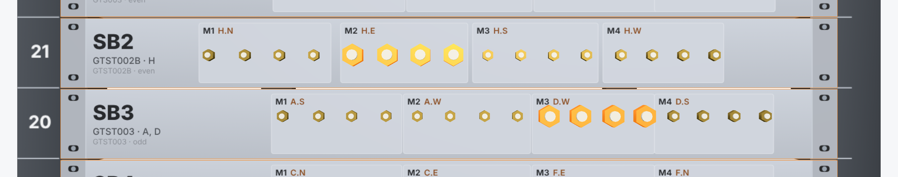
A1A2A3A4B1B2B3B4Connect these 12 cables
| ID | From | To | Part | Length · route mm | VLAN / note |
|---|---|---|---|---|---|
| R041 | SB2.M2.T1 | ATT-05.ch1.in | Mini-Circuits CBL-3FT-SMSM+ | 0.91 m · route 678 | THD H.E tile 1; span 8U, needs 0.57 m |
| R042 | SB2.M2.T2 | ATT-05.ch2.in | Mini-Circuits CBL-3FT-SMSM+ | 0.91 m · route 658 | THD H.E tile 2; span 8U, needs 0.57 m |
| R043 | SB2.M2.T3 | ATT-05.ch3.in | Mini-Circuits CBL-3FT-SMSM+ | 0.91 m · route 636 | THD H.E tile 3; span 8U, needs 0.57 m |
| R044 | SB2.M2.T4 | ATT-05.ch4.in | Mini-Circuits CBL-3FT-SMSM+ | 0.91 m · route 614 | THD H.E tile 4; span 8U, needs 0.57 m |
| R045 | SB3.M3.T1 | CPL-DW.t1.IN | Mini-Circuits CBL-1FT-SMSM+ | 0.30 m · route 252 | THD D.W tile 1: module to coupler IN; span 2U, needs 0.19 m |
| R046 | SB3.M3.T2 | CPL-DW.t2.IN | Mini-Circuits CBL-1FT-SMSM+ | 0.30 m · route 252 | THD D.W tile 2: module to coupler IN; span 2U, needs 0.19 m |
| R047 | SB3.M3.T3 | CPL-DW.t3.IN | Mini-Circuits CBL-1FT-SMSM+ | 0.30 m · route 252 | THD D.W tile 3: module to coupler IN; span 2U, needs 0.19 m |
| R048 | SB3.M3.T4 | CPL-DW.t4.IN | Mini-Circuits CBL-1FT-SMSM+ | 0.30 m · route 252 | THD D.W tile 4: module to coupler IN; span 2U, needs 0.19 m |
| R049 | CPL-DW.t1.THRU | ATT-05.ch1.out | Mini-Circuits CBL-2FT-SMSM+ | 0.61 m · route 550 | THD tile 1; span 5U, needs 0.52 m |
| R050 | CPL-DW.t2.THRU | ATT-05.ch2.out | Mini-Circuits CBL-2FT-SMSM+ | 0.61 m · route 527 | THD tile 2; span 5U, needs 0.52 m |
| R051 | CPL-DW.t3.THRU | ATT-05.ch3.out | Mini-Circuits CBL-2FT-SMSM+ | 0.61 m · route 505 | THD tile 3; span 5U, needs 0.52 m |
| R052 | CPL-DW.t4.THRU | ATT-05.ch4.out | Mini-Circuits CBL-2FT-SMSM+ | 0.61 m · route 482 | THD tile 4; span 5U, needs 0.52 m |
IF link TDE (ATT-06)
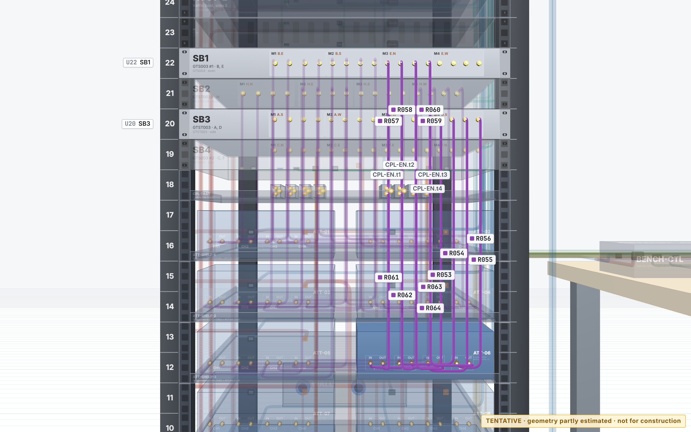
Tile mapping: tile i → ATT-06 channel i
From the A-side tile through the attenuator to the B-side tile; passive parts are named with the ports used. 3D close-up: poc2_renders/link_TDE.png (or search R053 in the twin and press "Trace signal").
| Tile | A side: tile, sector | A path | Attenuator | B path | B side: tile, sector |
|---|---|---|---|---|---|
| 1 | SB3.M4.T1 D.S | R053 | ATT-06 CH1 in→out | R061 → CPL-EN.t1 (THRU→IN) → R057 | SB1.M3.T1 E.N |
| 2 | SB3.M4.T2 D.S | R054 | ATT-06 CH2 in→out | R062 → CPL-EN.t2 (THRU→IN) → R058 | SB1.M3.T2 E.N |
| 3 | SB3.M4.T3 D.S | R055 | ATT-06 CH3 in→out | R063 → CPL-EN.t3 (THRU→IN) → R059 | SB1.M3.T3 E.N |
| 4 | SB3.M4.T4 D.S | R056 | ATT-06 CH4 in→out | R064 → CPL-EN.t4 (THRU→IN) → R060 | SB1.M3.T4 E.N |
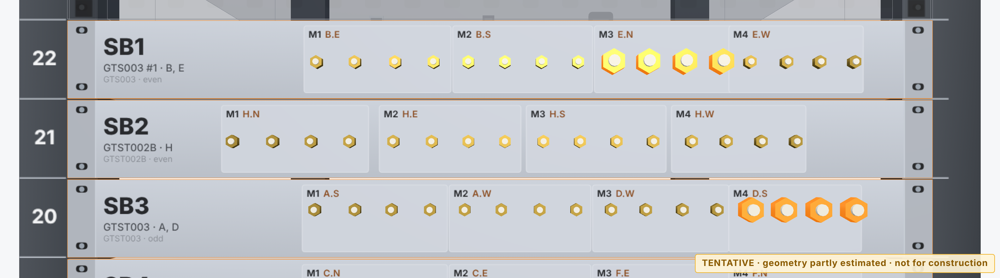
A1A2A3A4B1B2B3B4Connect these 12 cables
| ID | From | To | Part | Length · route mm | VLAN / note |
|---|---|---|---|---|---|
| R053 | SB3.M4.T1 | ATT-06.ch1.in | Mini-Circuits CBL-2FT-SMSM+ | 0.61 m · route 511 | TDE D.S tile 1; span 7U, needs 0.48 m |
| R054 | SB3.M4.T2 | ATT-06.ch2.in | Mini-Circuits CBL-2FT-SMSM+ | 0.61 m · route 487 | TDE D.S tile 2; span 7U, needs 0.48 m |
| R055 | SB3.M4.T3 | ATT-06.ch3.in | Mini-Circuits CBL-2FT-SMSM+ | 0.61 m · route 464 | TDE D.S tile 3; span 7U, needs 0.48 m |
| R056 | SB3.M4.T4 | ATT-06.ch4.in | Mini-Circuits CBL-2FT-SMSM+ | 0.61 m · route 441 | TDE D.S tile 4; span 7U, needs 0.48 m |
| R057 | SB1.M3.T1 | CPL-EN.t1.IN | Mini-Circuits CBL-1FT-SMSM+ | 0.30 m · route 243 | TDE E.N tile 1: module to coupler IN; span 4U, needs 0.28 m |
| R058 | SB1.M3.T2 | CPL-EN.t2.IN | Mini-Circuits CBL-1FT-SMSM+ | 0.30 m · route 243 | TDE E.N tile 2: module to coupler IN; span 4U, needs 0.28 m |
| R059 | SB1.M3.T3 | CPL-EN.t3.IN | Mini-Circuits CBL-1FT-SMSM+ | 0.30 m · route 243 | TDE E.N tile 3: module to coupler IN; span 4U, needs 0.28 m |
| R060 | SB1.M3.T4 | CPL-EN.t4.IN | Mini-Circuits CBL-1FT-SMSM+ | 0.30 m · route 243 | TDE E.N tile 4: module to coupler IN; span 4U, needs 0.28 m |
| R061 | CPL-EN.t1.THRU | ATT-06.ch1.out | Mini-Circuits CBL-2FT-SMSM+ | 0.61 m · route 346 | TDE tile 1; span 5U, needs 0.48 m |
| R062 | CPL-EN.t2.THRU | ATT-06.ch2.out | Mini-Circuits CBL-2FT-SMSM+ | 0.61 m · route 357 | TDE tile 2; span 5U, needs 0.48 m |
| R063 | CPL-EN.t3.THRU | ATT-06.ch3.out | Mini-Circuits CBL-2FT-SMSM+ | 0.61 m · route 379 | TDE tile 3; span 5U, needs 0.48 m |
| R064 | CPL-EN.t4.THRU | ATT-06.ch4.out | Mini-Circuits CBL-2FT-SMSM+ | 0.61 m · route 401 | TDE tile 4; span 5U, needs 0.48 m |
IF link TEF (ATT-07)
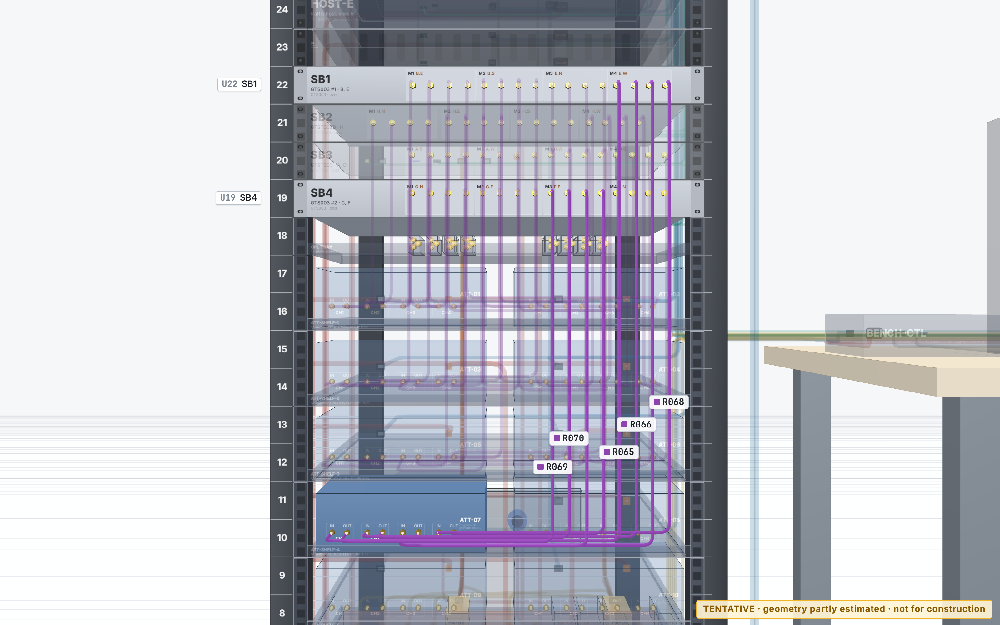
Tile mapping: tile i → ATT-07 channel i
From the A-side tile through the attenuator to the B-side tile; passive parts are named with the ports used. 3D close-up: poc2_renders/link_TEF.png (or search R065 in the twin and press "Trace signal").
| Tile | A side: tile, sector | A path | Attenuator | B path | B side: tile, sector |
|---|---|---|---|---|---|
| 1 | SB1.M4.T1 E.W | R065 | ATT-07 CH1 in→out | R069 | SB4.M3.T1 F.E |
| 2 | SB1.M4.T2 E.W | R066 | ATT-07 CH2 in→out | R070 | SB4.M3.T2 F.E |
| 3 | SB1.M4.T3 E.W | R067 | ATT-07 CH3 in→out | R071 | SB4.M3.T3 F.E |
| 4 | SB1.M4.T4 E.W | R068 | ATT-07 CH4 in→out | R072 | SB4.M3.T4 F.E |
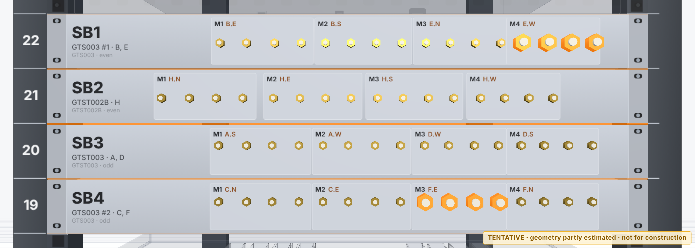
A1A2A3A4B1B2B3B4Connect these 8 cables
| ID | From | To | Part | Length · route mm | VLAN / note |
|---|---|---|---|---|---|
| R065 | SB1.M4.T1 | ATT-07.ch1.in | Mini-Circuits CBL-1M-SMSM+ | 1.00 m · route 946 | TEF E.W tile 1; span 11U, needs 0.90 m |
| R066 | SB1.M4.T2 | ATT-07.ch2.in | Mini-Circuits CBL-1M-SMSM+ | 1.00 m · route 924 | TEF E.W tile 2; span 11U, needs 0.90 m |
| R067 | SB1.M4.T3 | ATT-07.ch3.in | Mini-Circuits CBL-1M-SMSM+ | 1.00 m · route 900 | TEF E.W tile 3; span 11U, needs 0.90 m |
| R068 | SB1.M4.T4 | ATT-07.ch4.in | Mini-Circuits CBL-1M-SMSM+ | 1.00 m · route 877 | TEF E.W tile 4; span 11U, needs 0.90 m |
| R069 | SB4.M3.T1 | ATT-07.ch1.out | Mini-Circuits CBL-3FT-SMSM+ | 0.91 m · route 737 | TEF F.E tile 1; span 8U, needs 0.65 m |
| R070 | SB4.M3.T2 | ATT-07.ch2.out | Mini-Circuits CBL-3FT-SMSM+ | 0.91 m · route 714 | TEF F.E tile 2; span 8U, needs 0.65 m |
| R071 | SB4.M3.T3 | ATT-07.ch3.out | Mini-Circuits CBL-3FT-SMSM+ | 0.91 m · route 692 | TEF F.E tile 3; span 8U, needs 0.65 m |
| R072 | SB4.M3.T4 | ATT-07.ch4.out | Mini-Circuits CBL-3FT-SMSM+ | 0.91 m · route 669 | TEF F.E tile 4; span 8U, needs 0.65 m |
IF link TFH (ATT-08)
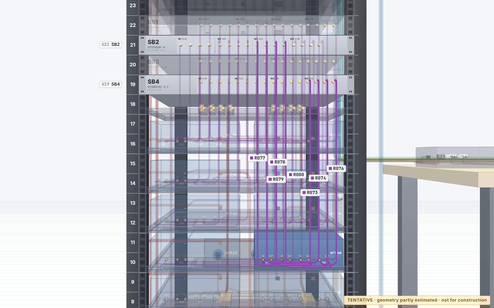
Tile mapping: tile i → ATT-08 channel i
From the A-side tile through the attenuator to the B-side tile; passive parts are named with the ports used. 3D close-up: poc2_renders/link_TFH.png (or search R073 in the twin and press "Trace signal").
| Tile | A side: tile, sector | A path | Attenuator | B path | B side: tile, sector |
|---|---|---|---|---|---|
| 1 | SB4.M4.T1 F.N | R073 | ATT-08 CH1 in→out | R077 | SB2.M3.T1 H.S |
| 2 | SB4.M4.T2 F.N | R074 | ATT-08 CH2 in→out | R078 | SB2.M3.T2 H.S |
| 3 | SB4.M4.T3 F.N | R075 | ATT-08 CH3 in→out | R079 | SB2.M3.T3 H.S |
| 4 | SB4.M4.T4 F.N | R076 | ATT-08 CH4 in→out | R080 | SB2.M3.T4 H.S |
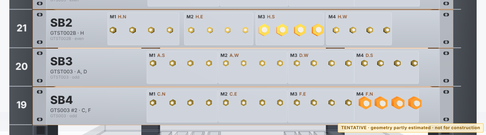
A1A2A3A4B1B2B3B4Connect these 8 cables
| ID | From | To | Part | Length · route mm | VLAN / note |
|---|---|---|---|---|---|
| R073 | SB4.M4.T1 | ATT-08.ch1.in | Mini-Circuits CBL-3FT-SMSM+ | 0.91 m · route 606 | TFH F.N tile 1; span 8U, needs 0.53 m |
| R074 | SB4.M4.T2 | ATT-08.ch2.in | Mini-Circuits CBL-3FT-SMSM+ | 0.91 m · route 582 | TFH F.N tile 2; span 8U, needs 0.53 m |
| R075 | SB4.M4.T3 | ATT-08.ch3.in | Mini-Circuits CBL-3FT-SMSM+ | 0.91 m · route 559 | TFH F.N tile 3; span 8U, needs 0.53 m |
| R076 | SB4.M4.T4 | ATT-08.ch4.in | Mini-Circuits CBL-3FT-SMSM+ | 0.91 m · route 536 | TFH F.N tile 4; span 8U, needs 0.53 m |
| R077 | SB2.M3.T1 | ATT-08.ch1.out | Mini-Circuits CBL-3FT-SMSM+ | 0.91 m · route 630 | TFH H.S tile 1; span 10U, needs 0.70 m |
| R078 | SB2.M3.T2 | ATT-08.ch2.out | Mini-Circuits CBL-3FT-SMSM+ | 0.91 m · route 652 | TFH H.S tile 2; span 10U, needs 0.70 m |
| R079 | SB2.M3.T3 | ATT-08.ch3.out | Mini-Circuits CBL-3FT-SMSM+ | 0.91 m · route 674 | TFH H.S tile 3; span 10U, needs 0.70 m |
| R080 | SB2.M3.T4 | ATT-08.ch4.out | Mini-Circuits CBL-3FT-SMSM+ | 0.91 m · route 696 | TFH H.S tile 4; span 10U, needs 0.70 m |
Coupling arm KBD (ATT-09)
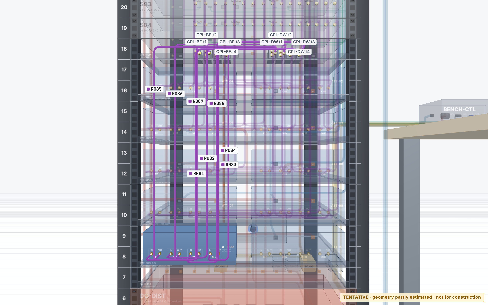
Tile mapping: tile i → ATT-09 channel i
From the A-side tile through the attenuator to the B-side tile; passive parts are named with the ports used. 3D close-up: poc2_renders/link_KBD.png (or search R081 in the twin and press "Trace signal").
| Tile | A side: tile, sector | A path | Attenuator | B path | B side: tile, sector |
|---|---|---|---|---|---|
| 1 | SB1.M1.T1 B.E | R017 → CPL-BE.t1 (IN→CPL (coupled arm: samples IN)) → R081 | ATT-09 CH1 in→out | R085 → CPL-DW.t1 (CPL→IN (coupled arm: samples IN)) → R045 | SB3.M3.T1 D.W |
| 2 | SB1.M1.T2 B.E | R018 → CPL-BE.t2 (IN→CPL (coupled arm: samples IN)) → R082 | ATT-09 CH2 in→out | R086 → CPL-DW.t2 (CPL→IN (coupled arm: samples IN)) → R046 | SB3.M3.T2 D.W |
| 3 | SB1.M1.T3 B.E | R019 → CPL-BE.t3 (IN→CPL (coupled arm: samples IN)) → R083 | ATT-09 CH3 in→out | R087 → CPL-DW.t3 (CPL→IN (coupled arm: samples IN)) → R047 | SB3.M3.T3 D.W |
| 4 | SB1.M1.T4 B.E | R020 → CPL-BE.t4 (IN→CPL (coupled arm: samples IN)) → R084 | ATT-09 CH4 in→out | R088 → CPL-DW.t4 (CPL→IN (coupled arm: samples IN)) → R048 | SB3.M3.T4 D.W |
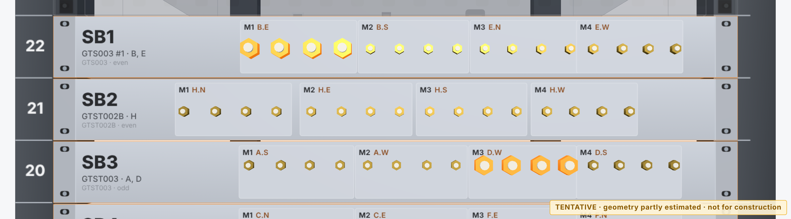
A1A2A3A4B1B2B3B4Connect these 8 cables
| ID | From | To | Part | Length · route mm | VLAN / note |
|---|---|---|---|---|---|
| R081 | CPL-BE.t1.CPL | ATT-09.ch1.in | BLK-18-S+ DC block + BW-S<n>W2+ pad on the coupler's CPL port, then Mini-Circuits CBL-3FT-SMSM+ | 0.91 m · route 674 | arm KBD tile 1, phase-matched; span 9U, needs 0.60 m |
| R082 | CPL-BE.t2.CPL | ATT-09.ch2.in | BLK-18-S+ DC block + BW-S<n>W2+ pad on the coupler's CPL port, then Mini-Circuits CBL-3FT-SMSM+ | 0.91 m · route 654 | arm KBD tile 2, phase-matched; span 9U, needs 0.60 m |
| R083 | CPL-BE.t3.CPL | ATT-09.ch3.in | BLK-18-S+ DC block + BW-S<n>W2+ pad on the coupler's CPL port, then Mini-Circuits CBL-3FT-SMSM+ | 0.91 m · route 634 | arm KBD tile 3, phase-matched; span 9U, needs 0.60 m |
| R084 | CPL-BE.t4.CPL | ATT-09.ch4.in | BLK-18-S+ DC block + BW-S<n>W2+ pad on the coupler's CPL port, then Mini-Circuits CBL-3FT-SMSM+ | 0.91 m · route 612 | arm KBD tile 4, phase-matched; span 9U, needs 0.60 m |
| R085 | ATT-09.ch1.out | CPL-DW.t1.CPL | Mini-Circuits CBL-3FT-SMSM+, then BLK-18-S+ DC block on the coupler's CPL port | 0.91 m · route 828 | arm KBD tile 1; span 9U, needs 0.69 m |
| R086 | ATT-09.ch2.out | CPL-DW.t2.CPL | Mini-Circuits CBL-3FT-SMSM+, then BLK-18-S+ DC block on the coupler's CPL port | 0.91 m · route 804 | arm KBD tile 2; span 9U, needs 0.69 m |
| R087 | ATT-09.ch3.out | CPL-DW.t3.CPL | Mini-Circuits CBL-3FT-SMSM+, then BLK-18-S+ DC block on the coupler's CPL port | 0.91 m · route 782 | arm KBD tile 3; span 9U, needs 0.69 m |
| R088 | ATT-09.ch4.out | CPL-DW.t4.CPL | Mini-Circuits CBL-3FT-SMSM+, then BLK-18-S+ DC block on the coupler's CPL port | 0.91 m · route 760 | arm KBD tile 4; span 9U, needs 0.69 m |
Coupling arm KAE (ATT-10)
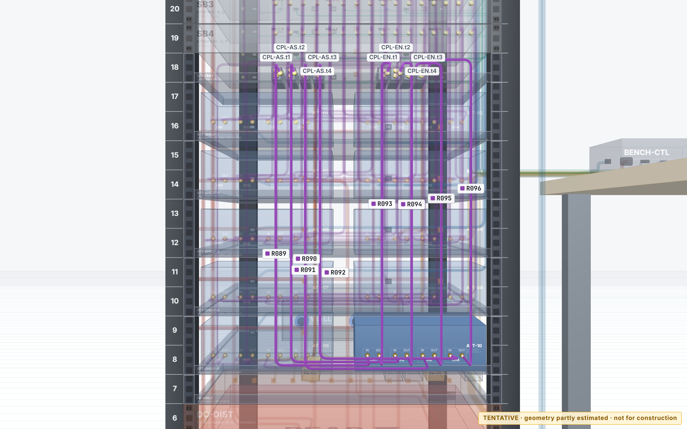
Tile mapping: tile i → ATT-10 channel i
From the A-side tile through the attenuator to the B-side tile; passive parts are named with the ports used. 3D close-up: poc2_renders/link_KAE.png (or search R089 in the twin and press "Trace signal").
| Tile | A side: tile, sector | A path | Attenuator | B path | B side: tile, sector |
|---|---|---|---|---|---|
| 1 | SB3.M1.T1 A.S | R005 → CPL-AS.t1 (IN→CPL (coupled arm: samples IN)) → R089 | ATT-10 CH1 in→out | R093 → CPL-EN.t1 (CPL→IN (coupled arm: samples IN)) → R057 | SB1.M3.T1 E.N |
| 2 | SB3.M1.T2 A.S | R006 → CPL-AS.t2 (IN→CPL (coupled arm: samples IN)) → R090 | ATT-10 CH2 in→out | R094 → CPL-EN.t2 (CPL→IN (coupled arm: samples IN)) → R058 | SB1.M3.T2 E.N |
| 3 | SB3.M1.T3 A.S | R007 → CPL-AS.t3 (IN→CPL (coupled arm: samples IN)) → R091 | ATT-10 CH3 in→out | R095 → CPL-EN.t3 (CPL→IN (coupled arm: samples IN)) → R059 | SB1.M3.T3 E.N |
| 4 | SB3.M1.T4 A.S | R008 → CPL-AS.t4 (IN→CPL (coupled arm: samples IN)) → R092 | ATT-10 CH4 in→out | R096 → CPL-EN.t4 (CPL→IN (coupled arm: samples IN)) → R060 | SB1.M3.T4 E.N |
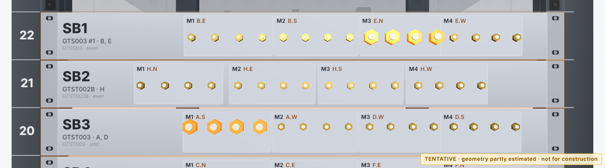
A1A2A3A4B1B2B3B4Connect these 8 cables
| ID | From | To | Part | Length · route mm | VLAN / note |
|---|---|---|---|---|---|
| R089 | CPL-AS.t1.CPL | ATT-10.ch1.in | BLK-18-S+ DC block + BW-S<n>W2+ pad on the coupler's CPL port, then Mini-Circuits CBL-3FT-SMSM+ | 0.91 m · route 724 | arm KAE tile 1, phase-matched; span 9U, needs 0.83 m |
| R090 | CPL-AS.t2.CPL | ATT-10.ch2.in | BLK-18-S+ DC block + BW-S<n>W2+ pad on the coupler's CPL port, then Mini-Circuits CBL-3FT-SMSM+ | 0.91 m · route 744 | arm KAE tile 2, phase-matched; span 9U, needs 0.83 m |
| R091 | CPL-AS.t3.CPL | ATT-10.ch3.in | BLK-18-S+ DC block + BW-S<n>W2+ pad on the coupler's CPL port, then Mini-Circuits CBL-3FT-SMSM+ | 0.91 m · route 766 | arm KAE tile 3, phase-matched; span 9U, needs 0.83 m |
| R092 | CPL-AS.t4.CPL | ATT-10.ch4.in | BLK-18-S+ DC block + BW-S<n>W2+ pad on the coupler's CPL port, then Mini-Circuits CBL-3FT-SMSM+ | 0.91 m · route 788 | arm KAE tile 4, phase-matched; span 9U, needs 0.83 m |
| R093 | ATT-10.ch1.out | CPL-EN.t1.CPL | Mini-Circuits CBL-3FT-SMSM+, then BLK-18-S+ DC block on the coupler's CPL port | 0.91 m · route 614 | arm KAE tile 1; span 9U, needs 0.66 m |
| R094 | ATT-10.ch2.out | CPL-EN.t2.CPL | Mini-Circuits CBL-3FT-SMSM+, then BLK-18-S+ DC block on the coupler's CPL port | 0.91 m · route 612 | arm KAE tile 2; span 9U, needs 0.66 m |
| R095 | ATT-10.ch3.out | CPL-EN.t3.CPL | Mini-Circuits CBL-3FT-SMSM+, then BLK-18-S+ DC block on the coupler's CPL port | 0.91 m · route 634 | arm KAE tile 3; span 9U, needs 0.66 m |
| R096 | ATT-10.ch4.out | CPL-EN.t4.CPL | Mini-Circuits CBL-3FT-SMSM+, then BLK-18-S+ DC block on the coupler's CPL port | 0.91 m · route 656 | arm KAE tile 4; span 9U, needs 0.66 m |
IP-50 conducted chains
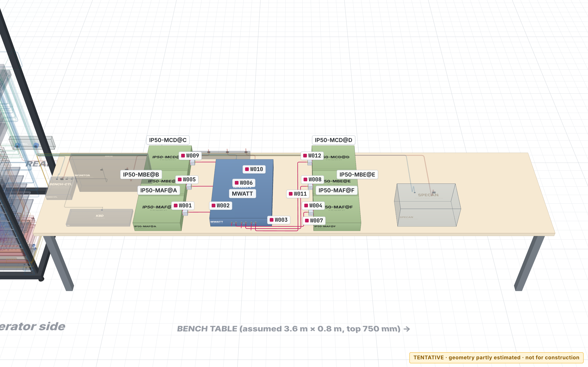
Chains: radio → transition → pad → MWATT channel → pad → transition → radio
| Hop | Radio A | A path | Attenuator | B path | Radio B |
|---|---|---|---|---|---|
| MAF | IP50-MAF@A.wg | W001 → WGT-MAF-A → W002 | MWATT CH1 | W003 → WGT-MAF-B → W004 | IP50-MAF@F.wg |
| MBE | IP50-MBE@B.wg | W005 → WGT-MBE-A → W006 | MWATT CH2 | W007 → WGT-MBE-B → W008 | IP50-MBE@E.wg |
| MCD | IP50-MCD@C.wg | W009 → WGT-MCD-A → W010 | MWATT CH3 | W011 → WGT-MCD-B → W012 | IP50-MCD@D.wg |

Radio columns, tagged


Connect these 12 cables
| ID | From | To | Part | Length · route mm | VLAN / note |
|---|---|---|---|---|---|
| W001 | IP50-MAF@A.wg | WGT-MAF-A.wg | waveguide-to-coax transition PEWCA1003 (band TBC) | flange · route 100 | hop MAF |
| W002 | WGT-MAF-A.coax | MWATT.ch1.in | SA18S10W-30 pad on the transition, then Mini-Circuits CBL-2FT-SMSM+ | 0.61 m · route 470 | hop MAF |
| W003 | MWATT.ch1.out | WGT-MAF-B.coax | Mini-Circuits CBL-3FT-SMSM+, then SA18S10W-30 pad on the transition | 0.91 m · route 667 | hop MAF |
| W004 | WGT-MAF-B.wg | IP50-MAF@F.wg | waveguide-to-coax transition PEWCA1003 (band TBC) | flange · route 160 | hop MAF |
| W005 | IP50-MBE@B.wg | WGT-MBE-A.wg | waveguide-to-coax transition PEWCA1003 (band TBC) | flange · route 180 | hop MBE |
| W006 | WGT-MBE-A.coax | MWATT.ch2.in | SA18S10W-30 pad on the transition, then Mini-Circuits CBL-3FT-SMSM+ | 0.91 m · route 828 | hop MBE |
| W007 | MWATT.ch2.out | WGT-MBE-B.coax | Mini-Circuits CBL-1M-SMSM+, then SA18S10W-30 pad on the transition | 1 m · route 889 | hop MBE |
| W008 | WGT-MBE-B.wg | IP50-MBE@E.wg | waveguide-to-coax transition PEWCA1003 (band TBC) | flange · route 240 | hop MBE |
| W009 | IP50-MCD@C.wg | WGT-MCD-A.wg | waveguide-to-coax transition PEWCA1003 (band TBC) | flange · route 260 | hop MCD |
| W010 | WGT-MCD-A.coax | MWATT.ch3.in | SA18S10W-30 pad on the transition, then Mini-Circuits CBL-2M-SMSM+ | 2.00 m · route 1186 | hop MCD |
| W011 | MWATT.ch3.out | WGT-MCD-B.coax | Mini-Circuits CBL-2M-SMSM+, then SA18S10W-30 pad on the transition | 2.00 m · route 1111 | hop MCD |
| W012 | WGT-MCD-B.wg | IP50-MCD@D.wg | waveguide-to-coax transition PEWCA1003 (band TBC) | flange · route 320 | hop MCD |
Checks and power-up
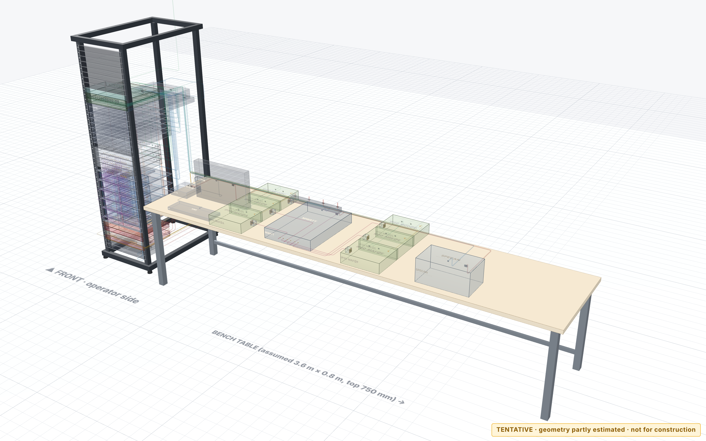
The install checks, the power-up order and the event procedure are in section 6.
5 Port maps
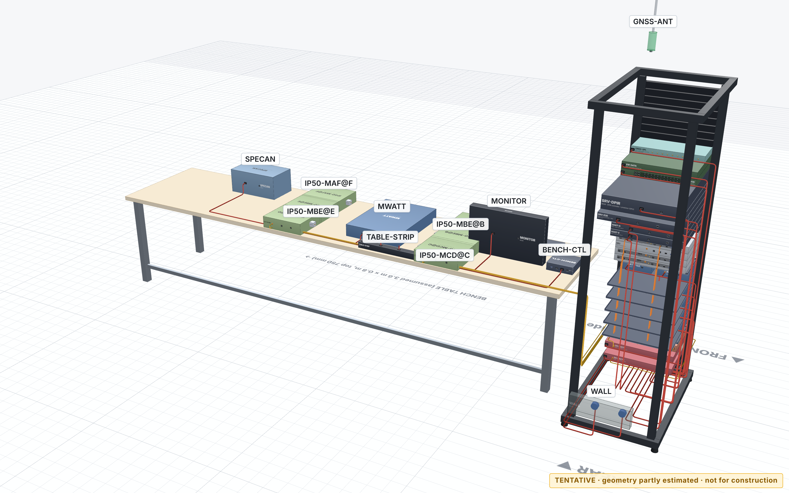
SW-DATA port plan
SW-DATA · Netgear M4350-24F4V · U33. Netgear M4350-24F4V 440 x 43.2 x 400 mm; ports on the front
Mounting. SW-DATA: ears on the FRONT posts (the usual way), port cages at the front rail plane, U33. Odd ports in the top row, even ports below; cage numbers as printed on the switch (TBC: open question 7).
| Port | Cage | VLAN | Site | Endpoint | Cable |
|---|---|---|---|---|---|
| P1 | SFP+ (1/10G) | 101 | H | SB2.H.SFP+ | F001 (10G) |
| P2 | SFP+ (1/10G) | 101 | H | HOST-H.nic10g | F002 (10G) |
| P3 | SFP+ (1/10G) | 101 | H | SRV-E2E.data | F003 (10G) |
| P4 | SFP+ (1/10G) | 102 | A | SB3.A.SFP+ | F004 (10G) |
| P5 | SFP+ (1/10G) | 102 | A | IP50-MAF@A.data | F005 (10G) |
| P6 | SFP+ (1/10G) | 102 | A | HOST-A.nic10g | F006 (10G) |
| P7 | SFP+ (1/10G) | 103 | B | SB1.B.SFP+ | F007 (10G) |
| P8 | SFP+ (1/10G) | 103 | B | IP50-MBE@B.data | F008 (10G) |
| P9 | SFP+ (1/10G) | 103 | B | HOST-B.nic10g | F009 (10G) |
| P10 | SFP+ (1/10G) | 104 | C | SB4.C.SFP+ | F010 (10G) |
| P11 | SFP+ (1/10G) | 104 | C | IP50-MCD@C.data | F011 (10G) |
| P12 | SFP+ (1/10G) | 105 | D | SB3.D.SFP+ | F012 (10G) |
| P13 | SFP+ (1/10G) | 105 | D | IP50-MCD@D.data | F013 (10G) |
| P14 | SFP+ (1/10G) | 105 | D | HOST-D.nic10g | F014 (10G) |
| P15 | SFP+ (1/10G) | 106 | E | SB1.E.SFP+ | F015 (10G) |
| P16 | SFP+ (1/10G) | 106 | E | IP50-MBE@E.data | F016 (10G) |
| P17 | SFP+ (10G) | 106 | E | HOST-E.nic10g | F017 (10G) |
| P18 | SFP+ (10G) | 107 | F | SB4.F.SFP+ | F018 (10G) |
| P19 | SFP+ (10G) | 107 | F | IP50-MAF@F.data | F019 (10G) |
SW-OOB port plan
SW-OOB · Netgear M4250-26G4XF-PoE+ (GSM4230PX) · U32. Netgear GSM4230PX 440 x 43.2 x 400 mm; all ports on Netgear's 'back' face, mounted facing the rack rear
Mounting. SW-OOB: ears on the FRONT posts, body reaching 400 mm back; its ports face the REAR, 400 mm behind the front rail (500 mm in front of the rear posts): reach in from the rear. Alternative if the lab prefers: ears on the REAR posts, ports flush with the rear (TBC: open question 7). Odd ports top row, even below; seen from the rear port 1 is on the RIGHT.
| Port | Cage | Endpoint | Cable |
|---|---|---|---|
| P1 | RJ-45 | HOST-H.mgmt | E001 |
| P2 | RJ-45 | HOST-A.mgmt | E002 |
| P3 | RJ-45 | HOST-B.mgmt | E003 |
| P4 | RJ-45 | HOST-D.mgmt | E004 |
| P5 | RJ-45 | HOST-E.mgmt | E005 |
| P6 | RJ-45 | SRV-DPIR.mgmt | E006 |
| P7 | RJ-45 | SRV-E2E.mgmt | E007 |
| P8 | RJ-45 | BENCH-CTL.mgmt | E008 |
| P9 | RJ-45 | ATT-01.lan | E009 |
| P10 | RJ-45 | ATT-02.lan | E010 |
| P11 | RJ-45 | ATT-03.lan | E011 |
| P12 | RJ-45 | ATT-04.lan | E012 |
| P13 | RJ-45 | ATT-05.lan | E013 |
| P14 | RJ-45 | ATT-06.lan | E014 |
| P15 | RJ-45 | ATT-07.lan | E015 |
| P16 | RJ-45 | ATT-08.lan | E016 |
| P17 | RJ-45 | ATT-09.lan | E017 |
| P18 | RJ-45 | ATT-10.lan | E018 |
| P19 | RJ-45 | MWATT.lan | E019 |
| P20 | RJ-45 | PDU-A.net | E020 |
| P21 | RJ-45 | PDU-B.net | E021 |
| P22 | RJ-45 | SPECAN.lan | E022 |
PDU outlet map
Outlet → device → cable (pictures of each PDU with its outlets tagged: step 12).
PDU-A U2
Raritan PX3-5260R class (1U, 12 x C13, switched, 16 A); fed by A001 from WALL.S1
| Outlet | Feeds | Cable | Lead |
|---|---|---|---|
| O1 | DC-RECT | A003 | 1.83 m |
| O2 | DC-RECT2 | A004 | 1.83 m |
| O3 | SW-DATA | A005 | 3.05 m |
| O4 | SW-OOB | A006 | 3.05 m |
| O5 | GNSS-SPL | A007 | 3.05 m |
| O6 | ATT-01 | A008 | 1.83 m |
| O7 | ATT-02 | A009 | 1.83 m |
| O8 | ATT-03 | A010 | 1.83 m |
| O9 | ATT-04 | A011 | 1.83 m |
| O10 | ATT-05 | A012 | 1.83 m |
| O11 | ATT-06 | A013 | 1.83 m |
| O12 | ATT-07 | A014 | 1.83 m |
PDU-B U1
Raritan PX3-5260R class (1U, 12 x C13, switched, 16 A); fed by A002 from WALL.S2
| Outlet | Feeds | Cable | Lead |
|---|---|---|---|
| O1 | ATT-08 | A015 | 1.83 m |
| O2 | ATT-09 | A016 | 1.83 m |
| O3 | ATT-10 | A017 | 1.83 m |
| O4 | SRV-DPIR | A018 | 3.05 m |
| O5 | SRV-E2E | A019 | 3.05 m |
| O6 | HOST-H | A020 | 3.05 m |
| O7 | HOST-A | A021 | 3.05 m |
| O8 | HOST-B | A022 | 3.05 m |
| O9 | HOST-D | A023 | 1.83 m |
| O10 | HOST-E | A024 | 1.83 m |
| O11 | spare | ||
| O12 | spare |
TABLE-STRIP table
bench mains strip, C13;
| Outlet | Feeds | Cable | Lead |
|---|---|---|---|
| O1 | BENCH-CTL | A025 | 1.83 m |
| O2 | MONITOR | A026 | 1.83 m |
| O3 | SPECAN | A027 | 3.05 m |
| O4 | MWATT | A028 | 1.83 m |
DC breaker and fuse map
Each breaker / fuse position, the cable on it, and what that feeds next (adaptor → node ETH1, or the radio). Spare positions stay OFF. Switch breakers on one by one at power-up.
DC-DIST U6 · Eaton DCD1M
| Position | Feeds | Cable | Then | Note |
|---|---|---|---|---|
| CB1 | PA-01.dc | D002 0.5 m (cut) | P001 → SB1.B.ETH1 | feeds node B |
| CB2 | PA-02.dc | D003 0.75 m (cut) | P002 → SB1.E.ETH1 | feeds node E |
| CB3 | PA-03.dc | D004 0.25 m (cut) | P003 → SB2.H.ETH1 | feeds node H |
| CB4 | PA-04.dc | D005 0.25 m (cut) | P004 → SB3.A.ETH1 | feeds node A |
| CB5 | PA-05.dc | D006 0.5 m (cut) | P005 → SB3.D.ETH1 | feeds node D |
| CB6 | PA-06.dc | D007 0.25 m (cut) | P006 → SB4.C.ETH1 | feeds node C |
| CB7 | PA-07.dc | D008 0.5 m (cut) | P007 → SB4.F.ETH1 | feeds node F |
| CB8 | spare (OFF) | |||
| CB9 | spare (OFF) | |||
| CB10 | spare (OFF) | |||
| bus | DC-RECT.bus | D001 0.25 m (cut) | 48 V bus |
DC-RECT U5 · Mean Well RCP-1UI + 2 x RCP-1000-48
| Position | Feeds | Cable | Then | Note |
|---|---|---|---|---|
| bus | DC-DIST.bus | D001 0.25 m (cut) | DC out; 48 V bus |
DC-DIST2 U4 · Westell N250110-N-0803, GMT fuses
| Position | Feeds | Cable | Then | Note |
|---|---|---|---|---|
| F1 | IP50-MAF@A.dc | D010 3.75 m (cut) | F1 output (bus A); -48 V through a GMT fuse | |
| F2 | IP50-MAF@F.dc | D011 5.25 m (cut) | F2 output (bus A); -48 V through a GMT fuse | |
| F3 | IP50-MBE@B.dc | D012 3.5 m (cut) | F3 output (bus A); -48 V through a GMT fuse | |
| F4 | IP50-MBE@E.dc | D013 4.75 m (cut) | F4 output (bus A); -48 V through a GMT fuse | |
| F5 | IP50-MCD@C.dc | D014 3.25 m (cut) | F5 output (bus A); -48 V through a GMT fuse | |
| F6 | IP50-MCD@D.dc | D015 4.25 m (cut) | F6 output (bus B); -48 V through a GMT fuse | |
| F7 | spare (OFF) | F7 output (bus B) | ||
| F8 | spare (OFF) | F8 output (bus B) | ||
| F9 | spare (OFF) | F9 output (bus B) | ||
| F10 | spare (OFF) | F10 output (bus B) | ||
| bus | DC-RECT2.out | D009 1.5 m (cut) | bus A input studs (B strapped); -48 V bus, positive grounded |
DC-RECT2 U3 · RCP-1UI + RCP-1000-48, wired -48 V
| Position | Feeds | Cable | Then | Note |
|---|---|---|---|---|
| out | DC-DIST2.bus | D009 1.5 m (cut) | DC out; -48 V bus, positive grounded |
6 Install checks and power-up
Model checks (from the twin)
| Model check | Result | Detail |
|---|---|---|
| Every port carries at most one cable | PASS | 418 ports used |
| Every cable reaches along its route | PASS | 200 cables with a length checked |
| IF cables not grossly over-length (slack loops) | PASS | 0 IF cables use under 35 % of their length (dress the slack in the cable manager) |
| Every rack device fits the rail depth | PASS | deepest 823 mm of 900 mm |
| No two devices share a rack unit | PASS | 34 U used of 42 |
| Spider SMA tile ports | PASS | 71 of 71 used; unused ones get ANNE-50+ loads |
Before power-up: installer checklist
- Every cable carries its ID tag at both ends.
- Every SMA torqued to 8 in-lb; no cable bent tighter than its minimum radius.
- Unused Spider tiles and coupler ports terminated (50-ohm loads).
- Every rack device on its U as in the front elevation; blanking panels in every empty U.
- DC polarity checked on every breaker and fuse output before any node or radio is connected (meter).
- PDUs, breakers and fuses OFF; PDU cords not yet in the wall.
- Every attenuator set to its start value (bench controller) before any radio is powered.
Power-up order
From the last step: “Run the install checks (this guide's last section), then power up: PDUs, DC drawers (breakers one by one), switches, nodes, radios.”
- PDUs: plug the PDU cords into the wall: A001 (PDU-A → WALL.S1), A002 (PDU-B → WALL.S2) (PDU-A, PDU-B)
- DC drawers (breakers one by one): rectifiers on; then breakers / fuses one at a time, checking each load (DC-DIST, DC-RECT, DC-DIST2, DC-RECT2)
- switches: wait for the switches to boot before the nodes (SW-DATA, SW-OOB)
- nodes: nodes come up as their breakers / injector feed them (SB1, SB2, SB3, SB4)
- radios: only after every MWATT channel is set (IP50-MAF@A, IP50-MAF@F, IP50-MBE@B, IP50-MBE@E, IP50-MCD@C, IP50-MCD@D)
Model warnings: parts whose boxes intersect in the twin
The twin places these parts so that they overlap: they will not fit exactly as drawn. Set them out on site (stagger, space or restack them) and report the real positions so the twin can be corrected.
| Item | Intersects | Overlap x × y × z mm |
|---|---|---|
| CPL-BE.t1 | CPL-AS.t1 | 13 × 19 × 90 |
| CPL-BE.t2 | CPL-AS.t2 | 14 × 19 × 90 |
| CPL-BE.t3 | CPL-AS.t3 | 12 × 19 × 90 |
| CPL-BE.t4 | CPL-AS.t4 | 12 × 19 × 90 |
| CPL-DW.t1 | CPL-EN.t1 | 13 × 19 × 90 |
| CPL-DW.t2 | CPL-EN.t2 | 13 × 19 × 90 |
| CPL-DW.t3 | CPL-EN.t3 | 13 × 19 × 90 |
| CPL-DW.t4 | CPL-EN.t4 | 12 × 19 × 90 |
| PA-01 | PA-03 | 30 × 25 × 95 |
| PA-01 | PA-04 | 30 × 25 × 95 |
| PA-01 | PA-06 | 30 × 25 × 95 |
| PA-02 | PA-05 | 30 × 25 × 95 |
| Item | Intersects | Overlap x × y × z mm |
|---|---|---|
| PA-02 | PA-07 | 30 × 25 × 95 |
| PA-03 | PA-04 | 30 × 25 × 95 |
| PA-03 | PA-06 | 30 × 25 × 95 |
| PA-04 | PA-06 | 30 × 25 × 95 |
| PA-05 | PA-07 | 30 × 25 × 95 |
| MONITOR | IP50-MBE@B | 80 × 86 × 60 |
| IP50-MAF@A | IP50-MBE@B | 322 × 86 × 20 |
| IP50-MAF@F | IP50-MBE@E | 322 × 86 × 20 |
| IP50-MBE@B | IP50-MCD@C | 322 × 86 × 20 |
| IP50-MBE@E | IP50-MCD@D | 322 × 86 × 20 |
| IP50-MCD@C | TABLE-STRIP | 42 × 44 × 44 |
7 Assumptions and open questions
Assumptions in the twin (34)
- StarTech 4POSTRACK42 (rails adjustable 559-1016 mm, square holes, M6 cage nuts); rail-to-rail depth set to 900 mm so 800 mm-class rack servers fit
- U1 bottom 120 mm above the floor (on castors, estimate)
- one 3.6 m x 0.8 m bench table to the right of the rack, top at 750 mm (estimate)
- SRV-DPIR, SRV-E2E, HOST-H, HOST-A, HOST-B, HOST-D, HOST-E: lab rack server, stand-in Dell R260 (1U, 497 mm) / R660 (1U, 823 mm) / R760 (2U, 772 mm)
- SB1, SB2, SB3, SB4: Siklu 1U Spider box: brushed aluminium front, 16 SMA measured from lab photos (+/-8 mm); depth ~331 body / 345 overall and the rear panel (seen from inside one box) to confirm
- ATT-SHELF-1, ATT-SHELF-2, ATT-SHELF-3, ATT-SHELF-4, ATT-SHELF-5: 2U of rack space with a 1U vented shelf carrying two attenuator boxes
- DC-DIST: Eaton DCD1M (~280 mm): breakers front; load terminal face to confirm (rear assumed)
- PDU-A, PDU-B: 1U switched PDU, 12 x C13, 16 A (Raritan PX3-5260R class, 183 mm); outlets on the rear assumed
- BENCH-CTL: small form-factor PC
- MONITOR: 24-inch monitor on a stand
- KBD: keyboard + mouse
- IP50-MAF@A, IP50-MAF@F, IP50-MBE@B, IP50-MBE@E, IP50-MCD@C, IP50-MCD@D: Ceragon IP-50CX (about 6 kg; size estimate, ceragon.com not reachable) laid flat; waveguide flange on the side toward MWATT
- TABLE-STRIP: bench mains strip, C13 (part TBC)
- WALL: wall sockets behind the rack (estimate)
- GNSS-ANT: GNSS antenna lead enters above the rack (estimate)
Open questions for the lab (what would firm up the twin)
The twin is TENTATIVE. Answers already given (2026-11-24): attenuators are small 4-channel boxes with a dial; PDUs are 1U; a standard 42U rack; Ceragon IP-50CX radios; servers and hosts are 1U/2U rack servers with a PC and monitor on the table. What still moves cables and lengths, most important first:
- Spider boxes, rear panels (all four). One straight-on photo of each rear, from outside, with a tape along the bottom edge, and a close-up of the green terminal block. Only one box was seen, from inside: per node an SFP+ cage, two RJ-45 (which is ETH1?), a USB part and a GNSS SMA, plus one RJ-45 for the internal Raspberry Pi and one DC terminal block per box.
- Spider boxes, power. What goes into the terminal block (voltage, polarity, plug)? Is each node powered from it, or does each node still need PoE on ETH1? If the box has its own DC inlet, the ten DC/PoE adaptors, the breaker feeds and the PoE patch cords change.
- Spider boxes, front and identity. Which GTS003 serial is #1 (SF06000007 is assumed) and which tile SMA belongs to which module and node. Front SMA positions were measured from photos to about 8 mm.
- Internal Raspberry Pi. Does it need a LAN port and an IP on the management switch? (Up to 4 more SW-OOB ports; PoC 1 would then outgrow the GSM4230PX.)
- IP-50CX. Band (the 23 GHz version would need the 18-26.5 GHz attenuator chain instead of the J7204B), the waveguide or antenna interface, the DC connector, and the ports used (1G RJ-45, 10G SFP+, 25G SFP28).
- Where the bench table stands relative to the rack (side, gap, height) and where the wall sockets are. This sets every rack-to-table cable length.
- Switches as mounted. The GSM4230PX has all its ports on Netgear's 'back' face; the twin mounts it ports-to-the- rear. Confirm, and confirm the M4350 port numbering (odd ports top).
- DC drawer. Which face of the Eaton DCD1M carries the load terminals (sources disagree); the Westell -48 V panel has all terminals on the front.
- Attenuator boxes, when chosen. Make and model, SMA positions, IN/OUT labelling, power (brick or C14) and LAN.
- GTSTU022 / GTSTU023 (kit item 1): what they are and how many.